Assembly: x86实模式
- TAGS: Assembly
实模式
主要内容
- 虚拟机的安装和使用
- 汇编语言程序的调试
- 在屏幕上显示文本
- 在屏幕上显示数字
- 循环批量传送和条件转移
- 计算机中的负数
- 从 1 加到 100 并显示结果
- INTEL 8086 处理器的寻址方式
- 硬盘和显卡的访问与控制
虚拟机的安装和使用
主要内容
- 安装VirtualBox虚拟机管理器
- 创建VirtualBox虚拟机
- 虚拟硬盘简介
- 在Windows下创建虚拟硬盘并安装操作系统
- 在Linux下创建虚拟硬盘并安装操作系统
安装VirtualBox虚拟机管理器
虚拟机软件：
- VMWare
- Windows Virtual PC
- VirtuaBox
- Bochs
- … …
官网：https://www.virtualbox.org/
windows安装virtualbox，可自定义安装目录，其他默认。
Ubuntu安装virtuabox，系统界面找到Ubuntu软件搜索virtuabox并安装
创建VirtualBox虚拟机
打开VirtuaBox，点击新建
新建一台没有虚拟硬盘的虚拟机
- 虚拟电脑名称和系统类型
- 名称：任意，learn
- 文件夹：默认或自定义，如D:\VirtuaBox VMs
- 虚拟光盘：无
- 类型：按需求。Linux
- Subtype: 按需求。Ubuntu
- 版本：按需求。Ubuntu(64-bit)
- 自动安装，无
- 硬件
- 内存：自定义，2G
- 处理器：自定义，2核心，尽量不超过宿主机核心
- 宿主机核心，我的电脑右键–>属性–>设备管理器–>处理器
- 虚拟硬盘
- 勾选，不添加虚拟硬盘
虚拟机设置
- 系统-主板：
- 启动顺序：去掉软驱
- 显示-屏幕
- 显存大小：32M
- 存储
- IDE光盘控制器，SATA机械硬盘控制器，稍后添加
虚拟硬盘简介
认识虚拟硬盘并介绍VHD格式的虚拟硬盘
和真实的计算机一样虚拟机也需要一块硬盘，但这个硬盘并不是真实的硬盘，而是用文件模拟的硬盘(虚拟硬盘)。
不同公司开发的虚拟机软件对于虚拟硬盘格式的标准各不相同
- VMDK(VMWare虚拟机)
- VDI(VirtuaBox虚拟机)
- VHD(Virtual-PC/Hyper-V虚拟机)
- … …
VHD格式虚拟机硬盘
VHD相对简单
- Virtual Hard Disk Image Format Specification
- 文件前面数据区0面0柱1扇区、0面0柱2扇区等，最后512字节结尾，以conectix开头表示这是一个合法的VHD文件，包含创建时间大小等信息。

创建 VHD(了解，不操作)
- 打开磁盘管理。 在任务栏的搜索框中，输入“计算机管理”，然后选择“存储”>“磁盘管理”。
- 在“操作”菜单上，选择“创建 VHD”
在Windows下创建虚拟硬盘并安装操作系统
创建虚拟硬盘
- 管理–>工具–>虚拟介质管理–>创建
- 虚拟硬盘文件类型：VHD
- 虚拟硬盘文件位置：自定义，D:\VirtuaBox VMs\unbutu.vhd
- 虚拟硬盘文件大小：自定义，10G
虚拟机关联虚拟硬盘
- 选择已经创建的虚拟硬盘。虚拟机设置–>存储–>SATA控制器
光盘安装操作系统
- 选择已经下载的ISO文件。虚拟机设置–>存储–>IDE控制器
- 启动虚拟机
- 安装操作系统
- 安装过程略
操作系统IOS
- Ubuntu https://ubuntu.com/
在Linux下创建虚拟硬盘并安装操作系统
同上，虚拟硬盘创建过程直接在virtuabox的对应虚拟机设置中操作，过程略
汇编语言程序的调试
主要内容
- 带调试功能的虚拟机
- 安装Bochs虚拟机
- 为Bochs虚拟机安装虚拟硬盘
- 创建主引导扇区程序
- 将程序写入硬盘主引导扇区
- 用调试器观察程序的执行
带调试功能的虚拟机
回顾一下：
二进制指令文件编译.
nasm exam.asm -f bin -o exam.bin
编译的文件不能在任何操作系统中运行。因为他里面只包含了处理器指令。而操作系统要求可 执行程序里必须包含一些额外的内容来知道系统如何加载这个程序。
计算机启动过程： 程序内容写入主引导扇区，因为在计算机加电或者复位后，将首先从ROM BIOS中执行，然后硬盘主引导扇区的内容读到内存，并执行读取后的指令
由于它破坏了真实的计算机，所以可用虚拟机来做这样的事。
如果想看到指令执行过程，可以使用另一种带调试过程的虚拟机Bochs
- 显示指令执行过程
- 显示机器的状态
- 显示寄存器的内容
安装Bochs虚拟机
Bochs官网：https://bochs.sourceforge.io/
Windows下载，这里下载的2.8版本，安装时自定义安装路径其他默认就好。
Ubuntu安装Bochs虚拟机
sudo apt install bochs #启动bochs bochs #选择3来编辑硬件
Bochs是一台完整的虚拟计算机，第一次启动时需要配置一套自己的硬件配置。
- bochsdbg.exe 具有调试功能的虚拟机
- bochs.exe 虚拟机
为Bochs虚拟机安装虚拟硬盘
创建VDH格式的硬盘，大小20MB
- 打开VirtuaBox虚拟机软件
- 菜单管理–>工具–>虚拟介质管理–>创建。硬盘类型VDH，大小20MB，预先分配空间。方便写入数据
- D:\VirtualBox VMs\learn.vhd
查看VDH硬盘信息。最后512字节为硬盘信息
- fixvhdwr.exe 自己编写的查看VDH硬盘信息工具
虚拟硬盘： D:\VirtualBox VMs\learn.vhd VHD规范的原始创建者标识： conectix 创建此文件的程序：vbox 创建此文件的程序版本：07.01 该虚拟磁盘创建于 2024-11-16 3:05:01。 602个柱面；4个磁头；每磁道有17个扇区。 总容量为 20 MB（兆字节）。 该磁盘为固定磁盘（容量固定，文件大小不变）
配置Bochs配置硬盘
- 打开Bochs，编辑Disk&Boot
- Floppy Options 软盘选项，关闭
- Type of floppy drive: none
- ATA channel 0 硬盘控制器通道0
- ATA channel 0: 启动，勾选Enable
- First HD/CD on channel 0:
- Type of ATA device: disk 设备类型硬盘
- Path or physical device name: 物理设备名的路径，选择刚创建的固定大小20MB的HDV格式硬盘
- Type of disk image: flat 硬盘镜像类型选择flat或者vpc
- Cylinders: 602 柱面数，填写刚创建虚拟硬盘对应的信息
- Heads: 4 磁头数，填写刚创建虚拟硬盘对应的信息
- Sector per track: 17 每道扇区数，填写刚创建虚拟硬盘对应的信息
- Sector size: 512 扇区大小，填写刚创建虚拟硬盘对应的信息
- Boot Options 计算机启动顺序
- 依次为disk, cdrom,noe
quit 退出
退出后启动需要重新设置，可 Save 保存配置到bochs工作目录下, 保存名称为bochsrc.bxrc，这是bochs默认启动的配置。
创建主引导扇区程序
16进制工具：
- Mac版 hexfiend 下载地址：https://github.com/HexFiend/HexFiend/releases
- Windows 版 010 editor， 下载地址：https://www.sweetscape.com/010editor/
- 命令行查看 hexdump -C ctfhub.png
创建主引导扇区程序exam.asm
mov ax, 0x30 ;将立即数传送到AX寄存器 mov dx, 0xC0 add ax, dx ;将寄存器ax和dx的值相加，结果在ax
D:\project\assemblyprojs>nasm exam.asm -f bin -o exam.bin #得到8个字节的数据。 $ hexdump -C exam.bin 00000000 b8 30 00 ba c0 00 01 d0 |.0......| 00000008 #8086是低端字节序的。 b8 30 00 就是 b8 0030 ba 00c0 0d0a
主引导扇区512个字节。一个有效的主引导扇区其最后2个字节的数据必须是55AA。exam.bin程序总长8个字节。缺少的502个字节用0填充。
mov ax, 0x30 ;将立即数传送到AX寄存器 mov dx, 0xC0 add ax, dx ;将寄存器ax和dx的值相加，结果在ax times 502 db 0 ;重复执行502次后面的指令，db 0 向程序添加1字节数据 db 0x55 db 0xAA ;主引导扇区有效标识55AA
db #伪指令，来向程序中添加1个字节的数据。数据可以是0，55等一个字节的数据。伪指令不是真正处理器指令而是只对编译器有效的指令。 times n #伪指令，重复后指令次数，n为次数
重新编译
D:\project\assemblyprojs>nasm exam.asm -f bin -o exam.bin jasper@jasper MINGW64 /d/project/assemblyprojs $ hexdump -C exam.bin 00000000 b8 30 00 ba c0 00 01 d0 00 00 00 00 00 00 00 00 |.0..............| 00000010 00 00 00 00 00 00 00 00 00 00 00 00 00 00 00 00 |................| * 000001f0 00 00 00 00 00 00 00 00 00 00 00 00 00 00 55 aa |..............U.| 00000200
将程序写入硬盘主引导扇区
将2进制程序写入虚拟硬盘文件learn.vhd
- 方法1 fixvhdwr.exe 用自定义的程序导入。
- LBA连续直写模式，起始LBA区号为0
- 方法2 其他有效方法
LBA
传统上，为了读写硬盘必须指定磁头号、柱面号、扇区号。但这样非常麻烦，可以指定逻辑扇区号。
1个扇区的大小512字节，可以看成一个数据块Block。所以可以认为硬盘是典型的块设备。
采用柱面(Cylinder)、磁盘(Header)和扇区(Sector)来访问硬盘的方法叫做CHS模式。每次访问读写 磁盘都要考虑这些不是很方便，传统的CHS采用24bit寻址，这样硬盘容量太小
- 传统的CHS采用 24 bit位寻址
- 其中前10位表示cylinder，中间8位表示head，后面6位表示sector
- 最大寻址空间 8 GB. echo 2^24*512/1024/1024|bc
如果将磁盘的所有扇区统一编号，在读写时只用指定的统一编号将方便很多。
逻辑块地址(LBA): logical block addressing
- LBA是一个整数，通过转换成 CHS 格式完成磁盘具体寻址
- ATA-1规范中定义了28位寻址模式，以每扇区512位组来计算，ATA-1所定义的 28位LBA上限达到128 GiB。2002年ATA-6规范采用48位LBA，同样以每扇区512 位组计算容量上限可达128Petabytes
范例：逻辑扇区编号
假定某硬盘有2个磁头，100个柱面，每磁盘有17个扇区。那么： 逻辑0扇区对应着0面0道1扇区； 逻辑1扇区对应着0面0道2扇区； ...... 逻辑16扇区对应着0面0道16扇区； 逻辑17扇区对应着1面0道1扇区； 逻辑18扇区对应着1面0道2扇区； ...... 逻辑33扇区对应着1面0道17扇区； 逻辑34扇区对应着0面1道1扇区； 逻辑35扇区对应着0面1道2扇区； ...... 要注意，扇区在编号时，是以柱面为单位的。即，先是0面0道，接着是1面0道，直到把所有 盘面上的0磁道处理完，再接着处理下一个柱面。之所以这样，是因为要加速硬盘的访问速度， 最好是尽可能不移动磁头。 因为这里总共有3400(2*100*17)个扇区，故最后一个逻辑扇区的编号是3399，它对应着1面99道17扇区， 这也是整个硬盘上最后一个物理扇区。
若已知物理扇区的位置是对于H面(头)、C道的第S个扇区，则它的逻辑扇区号是：
\begin{equation*} C \times 磁头总数 \times 每道扇区数 + H \times 每道扇区数 + (S - 1) \end{equation*}用调试器观察程序的执行
通过调试主引导扇区程序，来了解Bochs虚拟机的软件调试环境，以及软件调试的一般过程
8086处理器之后的32位64位寄存器
| ||||||||||||||||||||||||||||||||||||||||||||||||||||||||||||||||||||||||||||||||||||||||||||||||||||||||||||||||||||||||||||||||||||||||||||||||||||||||||||||||||||||||||||||||||||||||||||||||||||||||||||||||||||||||||||||||||||||||||||||||||||||||||||||||||||||||||||||||||||||||||||||||||||||||||||||||||||||||||||||||||||||||||||||||||||||||||||||||||||||||||||||||||||||||||||||||||||||||||||||||||||||||||||||||||||
| 64位寄存器 | 低32位 | 低16位 | 低8位 |
|---|---|---|---|
| rax | eax | ax | al |
| rbx | ebx | bx | bl |
| rcx | ecx | cx | cl |
| rdx | edx | dx | dl |
| rsi | esi | si | sil |
| rdi | edi | di | dil |
| rbp | ebp | bp | bpl |
| rsp | esp | sp | spl |
ax、bx、cx 和 dx 的高 8 位仍可寻址为 ah、bh、ch、dh，但不能与所有类型的操作数一起使用。
| 64位寄存器 | 低32位 | 低16位 | 低8位 |
|---|---|---|---|
| rip | eip | ip |
x86体系结构（32位）
x86体系结构源自1980年代，它是一种CISC（复杂指令集计算）架构，广泛应用于个人电脑中。在32位的x86体系结构中，主要包括以下几类寄存器：
- 通用寄存器（EAX, EBX, ECX, EDX）：用于多种算术和逻辑运算。
- 索引寄存器（ESI, EDI）：主要用于指针操作和字符串处理。
- 指针寄存器（ESP, EBP）：用于管理堆栈操作。
- 段寄存器（CS, DS, SS, ES, FS, GS）：用于存储内存段的地址。
- 指令指针（EIP）：存储即将执行的下一条指令的地址。
- 标志寄存器（EFLAGS）：存储当前状态标志，如零标志、符号标志等。
x86-64体系结构（64位）
随着技术的发展，64位计算成为必要，因此x86架构被扩展到了x86-64，也称为AMD64或Intel 64。这个架构不仅增加了寄存器的数量，而且扩展了寄存器的大小。在64位架构中，主要的变化包括：
- 扩展的通用寄存器：每个32位寄存器（如EAX）都有对应的64位版本（如RAX）。
- 新增的通用寄存器：R8 到 R15。
- 扩展的索引寄存器：ESI、EDI、EBP、ESP都有对应的64位版本（如RSI、RDI、RBP、RSP）。
- 扩展的指令指针和标志寄存器：RIP 和 RFLAGS。
这些改进提供了更大的地址空间和更高的数据处理能力，使得64位处理器可以高效地处理更大的数据集和更复杂的程序。
boch开机
已经准备
- 虚拟硬盘文件
- 主引导扇区程序
之后就可在Bochs虚拟中调试了。打开具有调试功能的虚拟机 bochsdbg.exe
与真正的处理器不同，bochs在取第1条指令之前会停下来，等待你的调试命令。
Next at t=0 #时钟滴答的第1次，即下一条指令在t=0的基础上执行。每模拟1次，时钟会滴答1次 (0) [0x0000fffffff0] f000:fff0 (unk. ctxt): jmpf 0xf000:e05b ; ea5be000f0 #这行表示即将执行的指令 <bochs:1> [0x0000fffffff0] #这条指令所在物理内存地址。仔细观察可发现，与下面的逻辑地址不一致， 逻辑地址对应ffff0的物理地址。这是有原因的，只在处理器刚启动时发生，暂不讨论 f000:fff0 #逻辑地址，可以理解为段寄存器CS内容F000, 指令指针寄存器IP内容FFF0。不像8086处理器段寄存器FFFF，指令指针寄存器0。 jmpf 0xf000:e05b #这条指令的汇编语言形式。跳转指令，目标位置0xf000:e05b ; #分号为注释 ea5be000f0 #这条指令的机器码
bochs调试命令
sreg #显示段寄存器内容 r #显示通过寄存器 s #step 单步执行 b #break断点指令，设置一个内存地址，当前处理器执行到此位置将停一下来 c #countine持续执行，如果遇到断点会停下来
bochs开始调试
#显示段寄存器 <bochs:1> sreg es:0x0000, dh=0x00009300, dl=0x0000ffff, valid=7 Data segment, base=0x00000000, limit=0x0000ffff, Read/Write, Accessed cs:0xf000, dh=0xff0093ff, dl=0x0000ffff, valid=7 Data segment, base=0xffff0000, limit=0x0000ffff, Read/Write, Accessed ss:0x0000, dh=0x00009300, dl=0x0000ffff, valid=7 Data segment, base=0x00000000, limit=0x0000ffff, Read/Write, Accessed ds:0x0000, dh=0x00009300, dl=0x0000ffff, valid=7 Data segment, base=0x00000000, limit=0x0000ffff, Read/Write, Accessed fs:0x0000, dh=0x00009300, dl=0x0000ffff, valid=7 Data segment, base=0x00000000, limit=0x0000ffff, Read/Write, Accessed gs:0x0000, dh=0x00009300, dl=0x0000ffff, valid=7 Data segment, base=0x00000000, limit=0x0000ffff, Read/Write, Accessed ldtr:0x0000, dh=0x00008200, dl=0x0000ffff, valid=1 tr:0x0000, dh=0x00008b00, dl=0x0000ffff, valid=1 gdtr:base=0x0000000000000000, limit=0xffff idtr:base=0x0000000000000000, limit=0xffff #cs, ds 早在8086处理器有有 #es, ss, fs, gs, tr, gdtr, idtr 是8086之后处理器新增的 #显示通用寄存器 <bochs:2> r rax: 00000000_00000000 rbx: 00000000_00000000 rcx: 00000000_00000000 rdx: 00000000_00000000 rsp: 00000000_00000000 rbp: 00000000_00000000 rsi: 00000000_00000000 rdi: 00000000_00000000 r8 : 00000000_00000000 r9 : 00000000_00000000 r10: 00000000_00000000 r11: 00000000_00000000 r12: 00000000_00000000 r13: 00000000_00000000 r14: 00000000_00000000 r15: 00000000_00000000 rip: 00000000_0000fff0 #指令指针寄存器内容fff0 eflags: 0x00000002: id vip vif ac vm rf nt IOPL=0 of df if tf sf zf af pf cf #bochs开机后，所有的通过寄存器内容都是0 #单步执行指令 #这里执行了 jmpf 0xf000:e05b 指令，可以看到下一条将执行指令是 xor ax, ax <bochs:3> s Next at t=1 #时钟滴答的第2次，即下一条指令在t=1的基础上执行。 (0) [0x0000000fe05b] f000:e05b (unk. ctxt): xor ax, ax ; 31c0 #可以看到，f000:e05b 和 物理地址fe05b一致了 #从地址可以看出，目前还是在 ROM BIOS中执行 Next at t=2 (0) [0x0000000fe05d] f000:e05d (unk. ctxt): out 0x0d, al ; e60d <bochs:5> s Next at t=3 (0) [0x0000000fe05f] f000:e05f (unk. ctxt): out 0xda, al ; e6da <bochs:6> s Next at t=4 (0) [0x0000000fe061] f000:e061 (unk. ctxt): mov al, 0xc0 ; b0c0
定位到离开ROM BIOS最后一条指令
因为计算机启动后，总是把主引导扇区内容读取物理内存地址7c00处，然后从主引导扇区开始取指令并执行指令。 可以将这个地址设置为断点。
b #break断点指令，设置一个内存地址，当前处理器执行到此位置将停一下来 c #countine持续执行，如果遇到断点会停下来 <bochs:1> b 0x7c00 <bochs:2> c ... ... #已经停在断点处 Next at t=17175563 (0) [0x000000007c00] 0000:7c00 (unk. ctxt): mov ax, 0x0030 ; b83000
可以看到下一次指令就是主引导扇区第1条指令 mov ax, 0x30, 也就是我们前面编写的主引导扇区程序。
执行程序
<bochs:3> r rax: 00000000_0000aa55 #内容是在执行ROM BIOS时遗留的，不用管 rbx: 00000000_00000000 rcx: 00000000_00090000 rdx: 00000000_00000080 rsp: 00000000_0000ffd6 rbp: 00000000_00000000 rsi: 00000000_000e0000 rdi: 00000000_0000ffac r8 : 00000000_00000000 r9 : 00000000_00000000 r10: 00000000_00000000 r11: 00000000_00000000 r12: 00000000_00000000 r13: 00000000_00000000 r14: 00000000_00000000 r15: 00000000_00000000 rip: 00000000_00007c00 eflags: 0x00000082: id vip vif ac vm rf nt IOPL=0 of df if tf SF zf af pf cf <bochs:4> s #执行mov ax, 0x30 Next at t=17175564 (0) [0x000000007c03] 0000:7c03 (unk. ctxt): mov dx, 0x00c0 ; bac000 <bochs:5> r rax: 00000000_00000030 #可以看到rax的最低16位内容 0030，说明刚才mov ax, 0x30已经成功执行 rbx: 00000000_00000000 rcx: 00000000_00090000 rdx: 00000000_00000080 rsp: 00000000_0000ffd6 rbp: 00000000_00000000 rsi: 00000000_000e0000 rdi: 00000000_0000ffac r8 : 00000000_00000000 r9 : 00000000_00000000 r10: 00000000_00000000 r11: 00000000_00000000 r12: 00000000_00000000 r13: 00000000_00000000 r14: 00000000_00000000 r15: 00000000_00000000 rip: 00000000_00007c03 eflags: 0x00000082: id vip vif ac vm rf nt IOPL=0 of df if tf SF zf af pf cf <bochs:6> s #执行 mov dx, 0xc0 Next at t=17175565 (0) [0x000000007c06] 0000:7c06 (unk. ctxt): add ax, dx ; 01d0 <bochs:7> r rax: 00000000_00000030 rbx: 00000000_00000000 rcx: 00000000_00090000 rdx: 00000000_000000c0 #rdx寄存器内容低16位 00c0 rsp: 00000000_0000ffd6 rbp: 00000000_00000000 rsi: 00000000_000e0000 rdi: 00000000_0000ffac r8 : 00000000_00000000 r9 : 00000000_00000000 r10: 00000000_00000000 r11: 00000000_00000000 r12: 00000000_00000000 r13: 00000000_00000000 r14: 00000000_00000000 r15: 00000000_00000000 rip: 00000000_00007c06 eflags: 0x00000082: id vip vif ac vm rf nt IOPL=0 of df if tf SF zf af pf cf <bochs:8> s #执行add ax, dx Next at t=17175566 (0) [0x000000007c08] 0000:7c08 (unk. ctxt): add byte ptr ds:[bx+si], al ; 0000 #下一条将执行指令，都是0不是有效指令 <bochs:9> r rax: 00000000_000000f0 #rax内容 ax + dx = 0x30 + 0xc0 = 0xf0 rbx: 00000000_00000000 rcx: 00000000_00090000 rdx: 00000000_000000c0 rsp: 00000000_0000ffd6 rbp: 00000000_00000000 rsi: 00000000_000e0000 rdi: 00000000_0000ffac r8 : 00000000_00000000 r9 : 00000000_00000000 r10: 00000000_00000000 r11: 00000000_00000000 r12: 00000000_00000000 r13: 00000000_00000000 r14: 00000000_00000000 r15: 00000000_00000000 rip: 00000000_00007c08 eflags: 0x00000006: id vip vif ac vm rf nt IOPL=0 of df if tf sf zf af PF cf #退出，按回车键结束本次调试 <bochs:10> q Bochs is exiting. Press ENTER when you're ready to close this window.
在屏幕上显示文本
主要内容
- 显卡和显存
- 准备访问文本模式下的显存
- 字符的编码和显示属性
- 文本模式下的显存操作
- MOV指令的形式和机器码
- 列表文件的创建和使用
- 在汇编程序中使用标号
- 段间直接绝对跳转指令
- 在Bochs中运行和调试写屏程序
- 在VirtualBox中运行写屏程序
- 主引导扇区执行时的内存布局
- 使用标号计算跳转的偏移地址
- 使用寄存器的绝对间接近跳转
- 使用相对偏移量的短跳转和近跳转
显卡和显存
显卡
为了显示文字，通常需要两种硬件，一种是显示器，一种是显卡。
- 显卡:的职责是为显示器提供内容并控制显示器的显示模式和状态。
- 独立显卡，独立生产销售的部件，需要插在主板上才能工作。
- 集成显卡，焊在主板上，是主板的一部分
- 显示器的职责是将那些内容以视觉可见的方式呈现在屏幕上。
显存
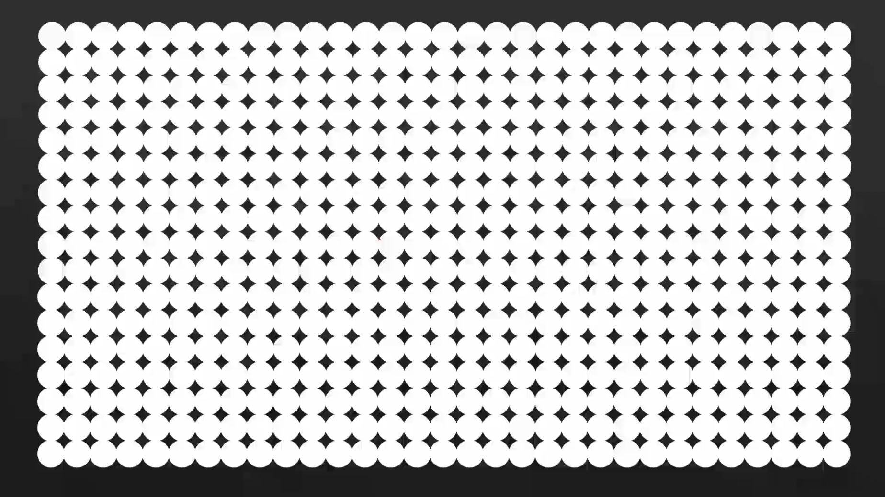
显卡控制显示器的最小单位是像素，这每一个原点都是一个像素，假定这是一个显示器。一个像素对应着屏幕上的一个点，屏幕上通常有数十万乃至更多的像素。通过控制每个像素的明暗和颜色，我们就能让这大量的像素形成美丽的图案和文字。
不过一个很容易想到的问题是如何来控制这些像素呢？答案是显卡都有自己的存储器，因为它位于显卡上，所以称之为显示存储器，简称显存。
计算机显示文本和图像的基本原理:
- 要显示的内容都预先写入显存。
- 和其他半导体存储器一样，显存并没有什么特殊的地方，也是一个按字节组织的存储期间。因此我们可以用显存里的数据来控制每一个像素，使它呈现不同的亮度和颜色
如果显示器只能显示黑白两种颜色，那么只需要控制每个像素是亮还是不亮。我们可以用显存里的每一个比特控制一个像素，如果比特是0，则像素是不亮的。如果是1，则像素是亮的。
例如
10001011 #1为亮，0暗
在这里这一串二进制比特用来控制各自的像素，比如比特为1时，对应的像素是亮的。比特是0时对应像素是暗的，看不见，后面的也一样。
有些显示器需要显示灰度，也就是纯黑和纯白之间的中间色。计算机的显示系统可以提供 256级灰度，这需要为一个像素提供8比特的数据，显存里的一个字节对应着显示器上的一个像素.
如上图。这个二进制数的大小决定了像素的灰度级别，数比较大的对应的像素比较亮。数字稍微小一点，像素就稍微暗一点。后面的也是一样。
现在的显示器可以显示彩色，这些显示器的每个像素是由红、绿、蓝三原色组成。每个颜色还有 256 级的深度，也就是颜色的深浅，或者专业的说是饱和度。
因为每个颜色特别小，那么三种不同深浅的颜色就会合成一个具有特定颜色的像素，这就是色彩混合的原理。
上图中
- 左侧是早期的阴极射线管显示器的像素组成，它由三个原色组成，共同组成一个像素，每个像素是由三个原色，由红、绿、蓝三个原色组成。每个原色的成分都是圆的，这个圆点是由电子数来控制的，所以打成一个圆点。
- 右侧是现代的液晶显示器的像素。每个原色是长方形的，因为每个液晶分子是长方形的。这样的话这三个长方形的原色就组成了一个液晶显示器的像素。
因为每个像素是由三种原色组成，而且每一种原色有 256 级的饱和度，所以在显存里每个像素需要三个字节，分别对应于红、绿、蓝三种颜色。每一个字节所表示的数字的大小就是各自原色的饱和度。
11111111 #第1个字节对应红像素，每个字节的大小就他们各自原色的饱和度 11111111 #第2个字节对应蓝像素 11111111 #第3个字节对应绿像素
比如在这里这三个字节共同表示一个像素。那么每个字节的大小就是红、绿、蓝三原色的饱和度。第一个字节它对应于红像素。第二个字节对应有绿像素。第三个字节它对应于蓝像素。那么每个字节的大小就是它们各自原色的饱和度。这样的话因为三种颜色的饱和度不一样，它们共同组成了一个具有特定颜色的像素。
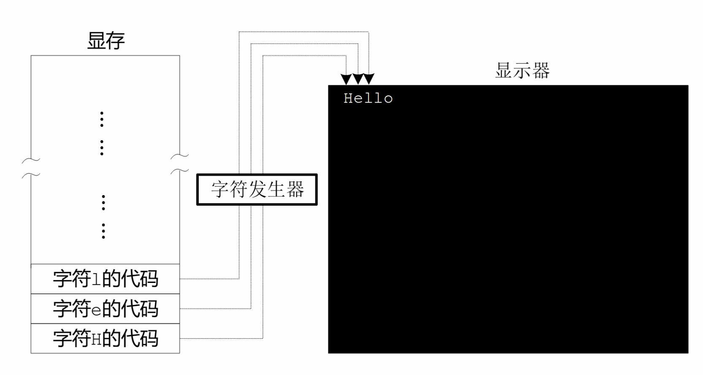
显然，不管你想显示什么东西，是文字还是图片，都必须小心细致的组织显存的内容，安排每个像素。不管是显示图片还是显示文字，对于显示器来说没有什么不同，因为所有的内容都是由像素组成，区别仅仅在于这些像素组成的是什么。有时候人们会说显示的是一棵树，有时候人们会说显示的是一个字母h。如果是要显示图片，这是必须要做的工作，必须要安排每一个像素。但是如果只是显示文字，这样做就太过于麻烦了，因为文字的数量是有限的，不像图片那样千变万化。
那么有没有一种方法可以简化文本的显示呢？这答案是可以的。答案是有的，工程师们将显卡的工作模式分成两种, 一种是文本模式，一种是图像模式，而且它们的显存也是分开的，有文本模式下的显存和图像模式下的显存。
- 在文本模式下显存的内容是字符的代码。
- 在图像模式下显存的内容是像素的颜色，就像一个二进制数，既可以是一个普通的数，也可以代表一条处理器指令一样，每个字符也可以表示成一个数字。
比如十六进制数字 4C 就代表字符l，那么这个数就是字符 l 的代码，或者说字符编码。如图所示，我们可以将字符的编码放到显存里。比如在这里我们依次存放了字符h、字符 e 和 字符l的代码，或者说编码。
在显卡上有字符发声器，它可以根据字符的编码来控制屏幕上的像素，使它们共同组成字符的轮廓。比如说当字符发声器接到字符 h 的编码的时候，那么就将它就控制一部分像素，将它显示成字符 h 的轮廓，当它接到字符 e 的编码的时候，就控制一部分像素将它显示成字符 e 的轮廓。
为了给出要显示的字符，处理器需要访问显存，把字符的编码写进去。然而显存是位于显卡上的，访问显存需要和显卡这个外围设备打交道，同时多一道手续自然是不好的，这当中最重要的考量是速度和效率。
为了实现一些快速的游戏动画效果，或者是播放高码率的电影，不直接访问显存是办不到的。为此，计算机系统的设计者们决定把显存映射到处理器可以直接访问的地址空间里，也就是内存空间里。
B8000 一直到BFFFF是留给显卡的
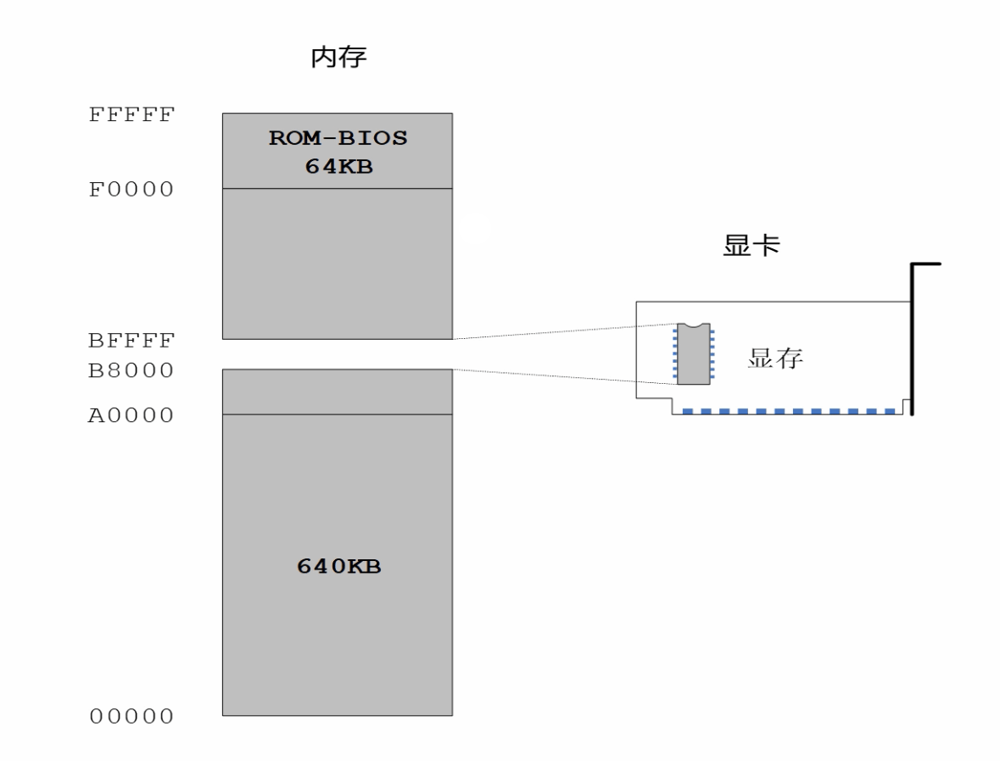
如图所示，我们知道 8086 可以访问一兆字节的内存这一部分，其中从地址 00000 开始到 A0000 结束的这一部分是常规的内存，是由内存条来提供的。从 F0000 到 FFFFF 之间的这一部分属于 ROM BIOS，它是由主板上的一个芯片来提供，也就是ROM BIOS 芯片。那么这样一来，中间还有一个 320 千字节的空洞，它的地址范围是 A0000一直到F0000，传统上这一段地址空间是由特定的外围设备来提供，其中就包括显卡，因为显示功能对于现代计算机来说实在是太重要了。
由于历史的原因，所有在个人计算机上使用的显卡在家电自检之后都会把自己初始化到 80 乘以 25 的文本模式。在这一种模式下，屏幕上可以显示 25 行，每行 80 个字符，所以叫做 80 乘以 25 的文本模式。那么这样的话，每屏总共可以显示 2, 000 个字符。所以一直以来，从地址 B8000一直到BFFFF的这一部分空间是留给显卡的，是由显卡来提供的，是将显卡上的显存文本模式的显存映射过来的，用来显示文本。这一段空间足以用来保存 2, 000 个字符以及它们的属性。
准备访问文本模式下的显存
文本模式下的显卡被映射到处理器的内存空间B8000到BFFFF，共320kB。为了访问显存也要使用逻辑地址。
BFFFF #逻辑地址 B800:7FFF ..... B8000 #逻辑地址 B800:0000
这一段内存可以看成为段地址为B800，偏移地址从0延伸到7FFF的区域，320千字节。
确定目标就可以编写程序了。
exam.asm
; 为访问文本模式下的显存做准备工作 mov ax, 0xb800 ; 把段地址0xb800传送给寄存器AX mov ds, ax ;将寄存器AX中的内容传送给数据段寄存器DS
访问数据要使用数据段寄存器DS，在intel中不允许让立即数传送到数据段寄存器。
# mov ds, 0xb800 #intel处理器，不存在这样的指令 #只允许如下指令 #mov 段寄存器, 通用寄存器 mov ds, ax mov ds, bx mov ds, cx #mov 段寄存器, [内存地址] mov es, [0x6C]
字符的编码和显示属性
通信的俩端都使用相同的字符编码方案才能正确的显示内容。
我们知道文字的信息是以数字的形式存储在计算机里。那么用哪个数字代表哪个字符呢？ 必须要制定一个全球都认可的编码方案和编码标准，否则设备之间的文字交流将无法实现。 必须完成字符的收集和整理工作，使之形成一个字符的清单或者成为字符集。计算机 发展的早期字符是的制定是小范围的事，那时大型机是主流。为了使用大型机，需要 使用终端通过电缆和电话线与主机相连。 那个时候的终端都是电传打字机，少数带有显示器，电传打字机带有键盘可以向主机 发送命令，主机将处理结果送回终端。为了在主机和终端之间通信，有个双方都能理解 的码表，这就是早期的字符集和编码方式。 这个字符集用于在主机和终端之间传送控制命令和文字信息。最著名的是IBM公司的码表， 1967年 ASCII码.
ASCII字符集，共128个字符。 控制字符用来控制电传打字机的动作，如确认、响铃、查询、同步、回车、换行等。
ASCII字符集用代码点得到字符编码的实例
现今绝大数字符集都兼容ASCII字符集。
字符的编码
https://en.wikipedia.org/wiki/ASCII
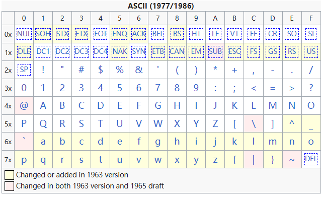
如果给每个字符按顺序编号，从16进制00到7F，每个字符的编码就是它在字符集中的位置编号
20 空格 21 字符! 30 数字字符0 3F 问号
字符编码、显存和显示器之间的关系
屏幕上的每个字符对应着显存中的2个连续字节。
- 第1个字节为屏幕的ascii编码
- 第2个字节为字符的属性，包括字符的颜色、前景色和底色(也就是背景色)。
范例1：
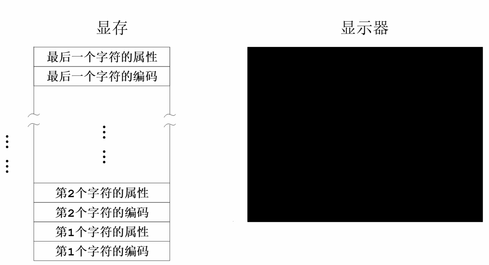
例如上图中，前2个字节对应屏幕左上角第1个字符位置。后俩个字节对应着屏幕第2个显示字符的位置。后面以此类推。 在显存中最后2个字节对应着屏幕右下角最后一个字符的位置。
范例2：
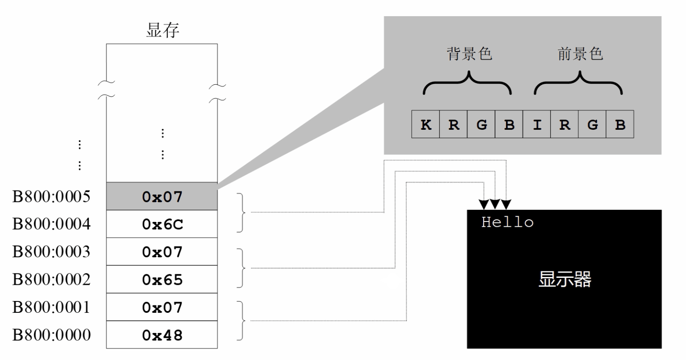
例如上图中，从显存的起始处理存放了一些字符的编码和属性。显存的开始位置逻辑地址是B800:0000，即段地址是 B800，偏移地址是0。
- 第1个字节存放的是字符h的编码，16进制的48
- 第2个字节存放的是字符的显示属性，16进制的07
这俩个字节就对应于屏幕上的第1个字符。从偏移地址为2的地方存放的是字符e的编码，16进制的65，它的第2个字节 存放的是它的显示属性，16进制的07。这俩个字节共同组成了屏幕上第2个字符e。以此类推。
字符的显示属性
字符编码前面已经了解过，现在我们重点讲一下字符的显示属性。
所有的属性都是1个字节长，分成2部分，低4位定义的是前景色，高4位定义的是背景色。
色彩主要是以由背景色的RGB和前景色的RGB来决定。我们知道所有颜色可以由红、绿、蓝 来调配，所以背景色有RGB这3原色，前景色也有RGB这3原色。除了RGB这3原色外，背景色 中有K位，K位是闪烁位，当K不等于0时背景不闪烁；K为1是背景闪烁。在前景色中有I位， I位是亮度位，当I为0时是正常亮度，当I为1时高亮。
对于前景色来说亮度不同会影响颜色的效果。
属性字节的组合
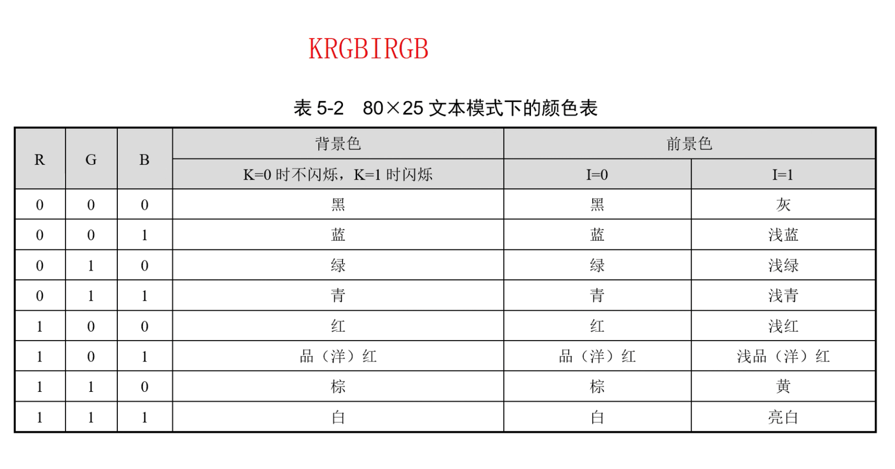
| R | G | B | 背景色 | 前景色 | |
|---|---|---|---|---|---|
| K=0不闪烁，K=1闪烁 | I=0 | I=1 | |||
| 0 | 0 | 0 | 黑 | 黑 | 灰 |
| 0 | 0 | 1 | 蓝 | 蓝 | 浅蓝 |
| 0 | 1 | 0 | 绿 | 绿 | 浅绿 |
| 0 | 1 | 1 | 青 | 青 | 浅青 |
| 1 | 0 | 0 | 红 | 红 | 浅红 |
| 1 | 0 | 1 | 品(洋)红 | 品(洋)红 | 浅品(洋)红 |
| 1 | 1 | 0 | 棕 | 棕 | 黄 |
| 1 | 1 | 1 | 白 | 白 | 亮白 |
上图是属性字节的搭配。
0x07 0000 0111 #高4位0000是背景色不闪烁黑色，低4位0111是前景色白色 黑底白字不闪烁
文本模式下的显存操作
exam.asm
mov ax, 0xb800 mov ds, ax mov byte [0x00], 0x41 ;字符A的ASCII编码。指令的意思是把A的编码传送到B8000处 mov byte [0x01], 0x04 ;黑底红字，无闪烁 mov byte [0x02], 's' ;等同于 mov [0x02], 0x73 , 汇编语言编译器会把 s 转换成字符的编码 mov byte [0x03], 0x04 mov byte [0x04], 's' mov byte [0x05], 0x04 mov byte [0x06], 'e' mov byte [0x07], 0x04 mov byte [0x08], 'm' mov byte [0x09], 0x04 mov byte [0x0a], 'b' mov byte [0x0b], 0x04 mov byte [0x0c], 'l' mov byte [0x0d], 0x04 mov byte [0x0e], 'y' mov byte [0x0f], 0x04 mov byte [0x10], '.' mov byte [0x11], 0x04
为了访问内存单元，需要给出段地址和偏移地址。这条指令 mov byte [0x00], 0x41 偏移地址是0x00，
段地址一般情况下，如果没有附加任何指示，那么段地址默认是在段寄存DS中。这里DS是0xb800
当这条指令执行时，将段寄存器DS中的内容做为段地址。具体操作是处理器把段寄存器DS中的内容 B800左移4位形成B8000，然后加指令中的偏移地址0，形成物理地址B8000，从这个位置开始的2个字节 单元对应屏幕左上角第1个字节。
在这条指令中 0x41 的长度不明确，可以认为它是一个字节长，也可以认为是2个字节长。
内存操作数部分 [0x00] 只是用来指定起始的偏移地址没有更多的信息，这个起始地址可以是1个字节
的起始地址，也可以是一个字的起始地址。
为此必须使用关键字byte来修饰目的操作数。
mov byte [0x00], 0x41 #偏移地址0x00是一个字节单元的偏移地址，本次传送是以字节方式进行 #一但目的操作数0x00被指定是byte，那么0x41也是一个字节长 mov ax, 0xb800 #目的操作数ax是16位长度，因此源操数0xb800是必须是16位的长度，并不需要指明宽度 #下面2条指令同样不用指明宽度 mov [0x00], al ;按字节操作 mov ax, [0x02] ;按字操作
MOV指令的形式和机器码
针对mov指令做个总结
MOV 目的操作数, 源操作数 目的操作数相当于容器，可以是：寄存器、内存地址 源操作数可以是：寄存器、内存地址、立即数 传送指令只会改变目的操作数的内容，不会改变源操作数内容
范例： mov指令在寄存器之间传送数据，但是寄存器的宽度必须相同
mov ah, bh mov ax, dx mov ax, bl ;报错，寄存器的宽度必须相同
范例：mov指令可以将内存中数据传送到寄存器
mov al, [0xf000] ;把内存里偏移地址为f000的数据传送到寄存器al中，在传送时段地址在段寄存器DS中。 ;目的操作数是8位的寄存器al，所以传送是以字节为单位进行的，是从偏移地址f000处取一个字节传送 mov bx, [0x08]
范例：mov指令可以将一个立即数传送到寄存器
mov al, 0x07 ;将立即数0x07传送到寄存器al。因为al是8位寄存器，因此0x07的长度被视为一个字节 mov bx, 0x08
范例：mov指令可以将指定的寄存器内容传送到指定的内存地址处，传送时数据宽度取决于寄存器的宽度
mov [0x0c], dx ;将寄存器dx中的内容传送到内存中，偏移地址为0x0c处。因为dx是16位的， ;因此传送的数据长度也是16位的，将占用偏移地址0x0c处2个连续的最小的单元。 mov [0x2000], ah
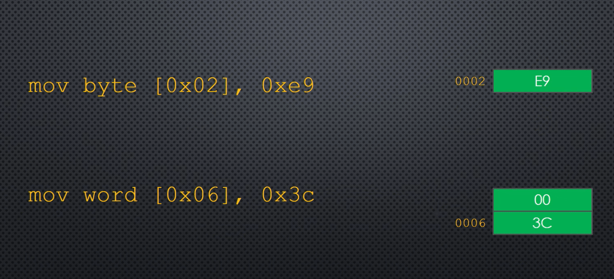
范例：mov指令可以把立即数传送到指定的内存地址处，使用关键字来修饰地址操作数
mov byte [0x02], 0xe9 ;将字节长度的立即数0xe9传送到起始地址为0x02字节单元 mov byte [0x06], 0x3c ;将一个字长度的立即数0x3c传送到内存中偏移地址为0x06处连续的2个最小单元
范例：mov指令的目的操作数不允许是立即数，并且目的操作数和源操作数不能同时为内存单元
; mov 0x07, al ; 目的操作数不允许是立即数 ; mov [0x01], [0x02] ;目的操作数和源操作数不能同时为内存单元 可以用2个指令分阶段实现 mov ax, [0x02] mov [0x01], ax
指令指针寄存器IP是在指令中不可直接访问的，不能出现在任何指令中，而只能间接地修改
;mov ip, 0xf000 ; 非法的，指令指针寄存器IP不能在指令中直接访问 ;如果目的操作是段寄存器，源操作数必须是通用寄存器或者内存地址 mov ds, ax mov es, [0x3002]
axam.asm的机器码、操作码是不一样的，观察编译后的mov指令
#编译，机器码看来不够直观 D:\project\assemblyprojs\assembly>nasm exam.asm -f bin -o exam.bin #-l 选项生成列表文件，包含了汇编指令和机器码 D:\project\assemblyprojs>nasm exam.asm -l exam.lst D:\project\assemblyprojs>type exam.lst 第1列为行号； 第2列为每条指令相对文件起始处的偏移量(汇编地址，程序汇编阶段所确认的地址)； 第3列为每条指令的机器码；第4列为每条指令的汇编语言格式；第5列为注释 1 00000000 B800B8 mov ax, 0xb800 2 00000003 8ED8 mov ds, ax 3 4 00000005 C606000041 mov byte [0x00], 0x41 ;字符A的ASCII编码. 指令的意思是把A的编码传送到B8000处 5 0000000A C606010004 mov byte [0x01], 0x04 ;黑底红字，无闪烁 6 7 0000000F C606020073 mov byte [0x02], 's' ;等同于 mov [0x02], 0x73 8 00000014 C606030004 mov byte [0x03], 0x04 9 10 00000019 C606040073 mov byte [0x04], 's' 11 0000001E C606050004 mov byte [0x05], 0x04 12 13 00000023 C606060065 mov byte [0x06], 'e' 14 00000028 C606070004 mov byte [0x07], 0x04 15 16 0000002D C60608006D mov byte [0x08], 'm' 17 00000032 C606090004 mov byte [0x09], 0x04 18 19 00000037 C6060A0062 mov byte [0x0a], 'b' 20 0000003C C6060B0004 mov byte [0x0b], 0x04 21 22 00000041 C6060C006C mov byte [0x0c], 'l' 23 00000046 C6060D0004 mov byte [0x0d], 0x04 24 25 0000004B C6060E0079 mov byte [0x0e], 'y' 26 00000050 C6060F0004 mov byte [0x0f], 0x04 27 28 00000055 C60610002E mov byte [0x10], '.' 29 0000005A C606110004 mov byte [0x11], 0x04
列表文件的创建和使用
完善主引导扇区程序
我们知道主引导扇区是512个字节，其中最后2个字节是主引导扇区的有效标志55和AA。
要填充的字节数为512字节减去55AA的2个字节，再减去程序的字节数。
在用nasm生成的列表文件里，有每一条指令的汇编地址，它是这一条汇编指令相对于程序开头处的偏移量， 通过偏移量就可以算出程序代码有多少字节。
nasm exam.asm -f bin -o exam.bin -l exam.lst
cat exam.lst
1 00000000 B800B8 mov ax, 0xb800
2 00000003 8ED8 mov ds, ax
3
4 00000005 C606000041 mov byte [0x00], 0x41 ;字符A的ASCII编码. 指令的意思是把A的编码传送到B8000处
5 0000000A C606010004 mov byte [0x01], 0x04 ;黑底红字，无闪烁
6
7 0000000F C606020073 mov byte [0x02], 's' ;等同于 mov [0x02], 0x73
8 00000014 C606030004 mov byte [0x03], 0x04
9
10 00000019 C606040073 mov byte [0x04], 's'
11 0000001E C606050004 mov byte [0x05], 0x04
12
13 00000023 C606060065 mov byte [0x06], 'e'
14 00000028 C606070004 mov byte [0x07], 0x04
15
16 0000002D C60608006D mov byte [0x08], 'm'
17 00000032 C606090004 mov byte [0x09], 0x04
18
19 00000037 C6060A0062 mov byte [0x0a], 'b'
20 0000003C C6060B0004 mov byte [0x0b], 0x04
21
22 00000041 C6060C006C mov byte [0x0c], 'l'
23 00000046 C6060D0004 mov byte [0x0d], 0x04
24
25 0000004B C6060E0079 mov byte [0x0e], 'y'
26 00000050 C6060F0004 mov byte [0x0f], 0x04
27
28 00000055 C60610002E mov byte [0x10], '.'
29 0000005A C606110004 mov byte [0x11], 0x04
30
31 ;times 510-? db 0 ; 要填充的字节数为512字节减去55AA的2个字节， 再减程序的长度。
32 0000005F 00<rep 1FEh> times 510 db 0
33
34
35 0000025D 55AA db 0x55, 0xaa ;用一个db可以定义多个字节，用逗号分隔
我们说过，每一条指令的汇编地址是这条指令相对于文件开始处的偏移量。可以看到程序的长度为5F
exam.asm
mov ax, 0xb800 mov ds, ax mov byte [0x00], 0x41 ;字符A的ASCII编码. 指令的意思是把A的编码传送到B8000处 mov byte [0x01], 0x04 ;黑底红字，无闪烁 mov byte [0x02], 's' ;等同于 mov [0x02], 0x73 mov byte [0x03], 0x04 mov byte [0x04], 's' mov byte [0x05], 0x04 mov byte [0x06], 'e' mov byte [0x07], 0x04 mov byte [0x08], 'm' mov byte [0x09], 0x04 mov byte [0x0a], 'b' mov byte [0x0b], 0x04 mov byte [0x0c], 'l' mov byte [0x0d], 0x04 mov byte [0x0e], 'y' mov byte [0x0f], 0x04 mov byte [0x10], '.' mov byte [0x11], 0x04 times 510-0x5f db 0 ; 要填充的字节数为512字节减去55AA的2个字节, 再减程序的长度。 db 0x55, 0xaa ;用一个db可以定义多个字节，用逗号分隔
编译
D:\project\assemblyprojs>nasm exam.asm -f bin -o exam.bin -l exam.lst jasper@jasper MINGW64 /d/project/assemblyprojs $ hexdump.exe -C exam.bin 00000000 b8 00 b8 8e d8 c6 06 00 00 41 c6 06 01 00 04 c6 |.........A......| 00000010 06 02 00 73 c6 06 03 00 04 c6 06 04 00 73 c6 06 |...s.........s..| 00000020 05 00 04 c6 06 06 00 65 c6 06 07 00 04 c6 06 08 |.......e........| 00000030 00 6d c6 06 09 00 04 c6 06 0a 00 62 c6 06 0b 00 |.m.........b....| 00000040 04 c6 06 0c 00 6c c6 06 0d 00 04 c6 06 0e 00 79 |.....l.........y| 00000050 c6 06 0f 00 04 c6 06 10 00 2e c6 06 11 00 04 00 |................| 00000060 00 00 00 00 00 00 00 00 00 00 00 00 00 00 00 00 |................| * 000001f0 00 00 00 00 00 00 00 00 00 00 00 00 00 00 55 aa |..............U.| 00000200 # 可以看到程序大小正好是512个字节
在汇编程序中使用标号
完善主引导扇区程序，了解什么是标号，并使用标号来计算数据和代码的长度
程序的指令长度是可变化的，自己算程序的长度是很麻烦的。
在文本编辑器里，汇编语言程序是分行的，每一行包括3个部分
- 标号：一串文本。通常是以冒号结尾。可选
- 指令：可选
- 注释：以分号开始，后面是说明性文字。可选
标号代表离它最近指令的汇编地址。使用标号可以做到真正的一劳永逸。
exam.asm
start: mov ax, 0xb800 mov ds, ax mov byte [0x00], 0x41 ;字符A的ASCII编码.指令的意思是把A的编码传送到B8000处 mov byte [0x01], 0x04 ;黑底红字，无闪烁 mov byte [0x02], 's' ;等同于 mov [0x02], 0x73 mov byte [0x03], 0x04 mov byte [0x04], 's' mov byte [0x05], 0x04 mov byte [0x06], 'e' mov byte [0x07], 0x04 mov byte [0x08], 'm' mov byte [0x09], 0x04 mov byte [0x0a], 'b' mov byte [0x0b], 0x04 mov byte [0x0c], 'l' mov byte [0x0d], 0x04 mov byte [0x0e], 'y' mov byte [0x0f], 0x04 mov byte [0x10], '.' mov byte [0x11], 0x04 current: times 510-(current-start) db 0 ;要填充的字节数为512字节减去55AA的2个字节, 再减程序长度。 db 0x55, 0xaa ;用一个db可以定义多个字节，用逗号分隔
编译
D:\project\assemblyprojs>nasm exam.asm -f bin -o exam.bin -l exam.lst
cat exam.lst
1 start:
2 00000000 B800B8 mov ax, 0xb800
3 00000003 8ED8 mov ds, ax
4
5 00000005 C606000041 mov byte [0x00], 0x41 ;字符A的ASCII编码.指令的意思是把A的编码传送到B8000处
6 0000000A C606010004 mov byte [0x01], 0x04 ;黑底红字，无闪烁
7
8 0000000F C606020073 mov byte [0x02], 's' ;等同于 mov [0x02], 0x73
9 00000014 C606030004 mov byte [0x03], 0x04
10
11 00000019 C606040073 mov byte [0x04], 's'
12 0000001E C606050004 mov byte [0x05], 0x04
13
14 00000023 C606060065 mov byte [0x06], 'e'
15 00000028 C606070004 mov byte [0x07], 0x04
16
17 0000002D C60608006D mov byte [0x08], 'm'
18 00000032 C606090004 mov byte [0x09], 0x04
19
20 00000037 C6060A0062 mov byte [0x0a], 'b'
21 0000003C C6060B0004 mov byte [0x0b], 0x04
22
23 00000041 C6060C006C mov byte [0x0c], 'l'
24 00000046 C6060D0004 mov byte [0x0d], 0x04
25
26 0000004B C6060E0079 mov byte [0x0e], 'y'
27 00000050 C6060F0004 mov byte [0x0f], 0x04
28
29 00000055 C60610002E mov byte [0x10], '.'
30 0000005A C606110004 mov byte [0x11], 0x04
31 current:
32 0000005F 00<rep 19Fh> times 510-(current-start) db 0 ;要填充的字节数为512字节减去55AA的2个字节, 再减程序长度。
33
34 000001FE 55AA db 0x55, 0xaa ;用一个db可以定义多个字节，用逗号分隔
jasper@jasper MINGW64 /d/project/assemblyprojs
$ hexdump.exe -C exam.bin
00000000 b8 00 b8 8e d8 c6 06 00 00 41 c6 06 01 00 04 c6 |.........A......|
00000010 06 02 00 73 c6 06 03 00 04 c6 06 04 00 73 c6 06 |...s.........s..|
00000020 05 00 04 c6 06 06 00 65 c6 06 07 00 04 c6 06 08 |.......e........|
00000030 00 6d c6 06 09 00 04 c6 06 0a 00 62 c6 06 0b 00 |.m.........b....|
00000040 04 c6 06 0c 00 6c c6 06 0d 00 04 c6 06 0e 00 79 |.....l.........y|
00000050 c6 06 0f 00 04 c6 06 10 00 2e c6 06 11 00 04 00 |................|
00000060 00 00 00 00 00 00 00 00 00 00 00 00 00 00 00 00 |................|
*
000001f0 00 00 00 00 00 00 00 00 00 00 00 00 00 00 55 aa |..............U.|
00000200
段间直接绝对跳转指令
断续完善主引导扇区程序，并认识段间直接绝对跳转指令
汇编程序是按顺序执行的，当执行到我们写的填充位置就会出现不可预见的问题。写完这些指令后我们的工作就做完了， 我们的任务很简单只要在屏幕上显示完文本Assebly就可以了。
想象一下我们的程序是完整的主引导扇区内容。在计算机处理器加电或者复位后，将首先从ROM BIOS中执行，然后把硬盘主引导扇区的内容读到读取物理内存地址7c00处，然后从主引导扇区开始取指令并执行指令。
物理地址7c00的逻辑地址可以表示成 0x0000:0x7c00，我们可以执行一段跳转指令重新从7c00处理读取程序代码 jmp 0x0000:0x7c00 。
exam.asm
start: mov ax, 0xb800 mov ds, ax mov byte [0x00], 0x41 ;字符A的ASCII编码.指令的意思是把A的编码传送到B8000处 mov byte [0x01], 0x04 ;黑底红字，无闪烁 mov byte [0x02], 's' ;等同于 mov [0x02], 0x73 mov byte [0x03], 0x04 mov byte [0x04], 's' mov byte [0x05], 0x04 mov byte [0x06], 'e' mov byte [0x07], 0x04 mov byte [0x08], 'm' mov byte [0x09], 0x04 mov byte [0x0a], 'b' mov byte [0x0b], 0x04 mov byte [0x0c], 'l' mov byte [0x0d], 0x04 mov byte [0x0e], 'y' mov byte [0x0f], 0x04 mov byte [0x10], '.' mov byte [0x11], 0x04 jmp 0x0000:0x7c00 ;循环从主引导扇区起始处读取指令。段间直接绝对跳转指令 current: times 510-(current-start) db 0 ;要填充的字节数为512字节减去55AA的2个字节, 再减程序长度。 db 0x55, 0xaa ;用一个db可以定义多个字节，用逗号分隔
这样就组成了段间直接绝对跳转指令。
- 段间指的是这条指令将跳到另外一个段里执行。段地址0x0000和偏移地址0x7c00。当处理器执行这条 跳转指令时，用指令中给出的段地址修改代码段寄存器CS，用指令中的偏移地址修改指令指针寄存器IP
- 直接绝对是指跳转的目标位置，也就是段地址0x0000和偏移地址0x7c00是直接在指令中给出的不需要计算的绝对地址。
编译观察
D:\project\assemblyprojs>nasm exam.asm -f bin -o exam.bin -l exam.lst jasper@jasper MINGW64 /d/project/assemblyprojs $ hexdump.exe -C exam.bin 00000000 b8 00 b8 8e d8 c6 06 00 00 41 c6 06 01 00 04 c6 |.........A......| 00000010 06 02 00 73 c6 06 03 00 04 c6 06 04 00 73 c6 06 |...s.........s..| 00000020 05 00 04 c6 06 06 00 65 c6 06 07 00 04 c6 06 08 |.......e........| 00000030 00 6d c6 06 09 00 04 c6 06 0a 00 62 c6 06 0b 00 |.m.........b....| 00000040 04 c6 06 0c 00 6c c6 06 0d 00 04 c6 06 0e 00 79 |.....l.........y| 00000050 c6 06 0f 00 04 c6 06 10 00 2e c6 06 11 00 04 ea |................| #跳转指令，EA是操作码 00000060 00 7c 00 00 00 00 00 00 00 00 00 00 00 00 00 00 |.|..............| #00 7c是偏移地址， 00 00 是段地址。因为是 #intel处理器是低端字节序的，处理器的低字节在内存的低地址处，处理器的高字节在内存的高地址处。 #所以 00 7c 00 00 ， 读的时候是从后往前读，读成 0000 7c00 00000070 00 00 00 00 00 00 00 00 00 00 00 00 00 00 00 00 |................| * 000001f0 00 00 00 00 00 00 00 00 00 00 00 00 00 00 55 aa |..............U.| 00000200
在Bochs中运行和调试写屏程序
调试程序，观察写屏过程，进一步了解程序调试的基本技巧
将2进制程序写入虚拟硬盘文件learn.vhd
- 方法1 fixvhdwr.exe 用自定义的程序导入。
- LBA连续直写模式，起始LBA区号为0
- 方法2 其他有效方法
打开bochs调试器bochsdbg.exe进行调试。
bochs调试命令
sreg #显示段寄存器内容 r #显示通过寄存器 s #step 单步执行 b #break断点指令，设置一个内存地址，当前处理器执行到此位置将停一下来 c #countine持续执行，如果遇到断点会停下来 帮助 help, help 命令 n #next，写step命令功能类似 xp /字节数和显示方式 物理内存地址 #查看内存中内容，如xp /512xb 0x7c00 ，其中x以16进制显示, b以字节为单位显示 u #后续的机指令反汇编成汇编代码。一个u反汇编一条指令。连续反汇编32条指令， u/32
bochs开机后调试界面
与真正的处理器不同，bochs在取第1条指令之前会停下来，等待你的调试命令。
Next at t=0 #时钟滴答的第1次，即下一条指令在t=0的基础上执行。每模拟1次，时钟会滴答1次 #处理器准备执行第1条指令。CS内容为f000, IP内容为fff0 (0) [0x0000fffffff0] f000:fff0 (unk. ctxt): jmpf 0xf000:e05b ; ea5be000f0 #这行表示即将执行的指令 <bochs:1> [0x0000fffffff0] #这条指令所在物理内存地址。仔细观察可发现，与下面的逻辑地址不一致， 逻辑地址对应ffff0的物理地址。这是有原因的，只在处理器刚启动时发生，暂不讨论 f000:fff0 #逻辑地址，可以理解为段寄存器CS内容F000, 指令指针寄存器IP内容FFF0。不像8086处理器段寄存器FFFF，指令指针寄存器0。 jmpf 0xf000:e05b #这条指令的汇编语言形式。跳转指令，目标位置0xf000:e05b ; #分号为注释 ea5be000f0 #这条指令的机器码
bochs开机后，准备跳到ROM BIOS中执行，ROM BIOS要做很多工作 ，其中最后一项工作是从虚拟硬件的主引导 扇区读取一个扇区数据，把主引导扇区读入到内存的物理地址0x7c00。
这时ROM BIOS还没有执行，查看7c00是什么，使用调试命令xp /512xb 0x7c00, 以16进制显示512个字节
xp /字节数和显示方式 物理内存地址 #查看内存中内容，如xp /512xb 0x7c00 ，其中x以16进制显示, b以字节为单位显示
帮助 help, help 命令
#查看7c00处理内容，以16进制显示512个字节 <bochs:3> xp /512xb 0x7c00 [bochs]: 0x0000000000007c00 <bogus+ 0>: 0x00 0x00 0x00 0x00 0x00 0x00 0x00 0x00 0x0000000000007c08 <bogus+ 8>: 0x00 0x00 0x00 0x00 0x00 0x00 0x00 0x00 ... ... 0x0000000000007df0 <bogus+ 496>: 0x00 0x00 0x00 0x00 0x00 0x00 0x00 0x00 0x0000000000007df8 <bogus+ 504>: 0x00 0x00 0x00 0x00 0x00 0x00 0x00 0x00 <bochs:4>
bochs开始调试
因为计算机启动后，总是把主引导扇区内容读取物理内存地址7c00处，然后从主引导扇区开始取指令并执行指令。 可以将这个地址设置为断点。
#设置断点7c00，因为ROM BIOS执行后最后的工作是把主引导扇区数据读入到内存的物理地址7c00处 <bochs:4> b 0x7c00 <bochs:5> c #处理器连续地执行，遇到断点停下 Next at t=17175563 (0) [0x000000007c00] 0000:7c00 (unk. ctxt): mov ax, 0xb800 ; b800b8 u 后续的机指令反汇编成汇编代码。一个u反汇编一条指令。连续反汇编32条指令， u/32 <bochs:30> u/32 #反汇编后续机器指令, 找到程序最后一条指令所在内存物理地址 0000000000007c00: ( ): mov ax, 0xb800 ; b800b8 0000000000007c03: ( ): mov ds, ax ; 8ed8 ... #最后一条指令的物理地址是 7c5f，方便设置断点 0000000000007c5f: ( ): jmpf 0x0000:7c00 ; ea007c0000 #查看7c00处理内容，以16进制显示512个字节. 可以看到我们写的主引导扇区程序指令 <bochs:6> xp /512xb 0x7c00 [bochs]: 0x0000000000007c00 <bogus+ 0>: 0xb8 0x00 0xb8 0x8e 0xd8 0xc6 0x06 0x00 0x0000000000007c08 <bogus+ 8>: 0x00 0x41 0xc6 0x06 0x01 0x00 0x04 0xc6 0x0000000000007c10 <bogus+ 16>: 0x06 0x02 0x00 0x73 0xc6 0x06 0x03 0x00 ...... 0x0000000000007df0 <bogus+ 496>: 0x00 0x00 0x00 0x00 0x00 0x00 0x00 0x00 0x0000000000007df8 <bogus+ 504>: 0x00 0x00 0x00 0x00 0x00 0x00 0x55 0xaa
单步运行程序指令, 数据段寄存内容为b800
#单步执行指令 <bochs:7> s Next at t=17175564 (0) [0x000000007c03] 0000:7c03 (unk. ctxt): mov ds, ax ; 8ed8 <bochs:8> s Next at t=17175565 #跟我们写的指令有区别，但总体一样的，是把字母A的编码0x41传送到偏移地址0， #但这里给出了默认的数据段寄存器ds，意思是传送到ds所指向的内存段，段中偏移地址0处 (0) [0x000000007c05] 0000:7c05 (unk. ctxt): mov byte ptr ds:0x0000, 0x41 ; c606000041 虚拟机的显示器已经显示了很多内容，这是启动信息。这些启动信息位于内存物理地址也就是显存0xb8000处 #查看显示器上已有内容，b800处的编码和颜色属性 <bochs:10> xp /16xb 0xb8000 [bochs]: 0x00000000000b8000 <bogus+ 0>: 0x42 0x0b 0x6f 0x0b 0x63 0x0b 0x68 0x0b 0x00000000000b8008 <bogus+ 8>: 0x73 0x0b 0x20 0x0b 0x56 0x0b 0x47 0x0b #0x42是显示器上字母B的编码，0x0b(0000 1011)是字母B的颜色属性(黑底青色) #0x6f是显示器上字母o的编码，0x0b(0000 1011)是字母o的颜色属性(黑底青色) <bochs:10>
继续运行程序，在屏幕左上角显示新的文本
#使用单步调试命令s，写入显存的指令时，写入的内容不能在屏幕上看出来。这里换成相似功能的n命令 <bochs:11> n #字母A的编码0x41写入到显存, ds:0x0000处，ds为0xb800 Next at t=17175566 (0) [0x000000007c0a] 0000:7c0a (unk. ctxt): mov byte ptr ds:0x0001, 0x04 ; c606010004 <bochs:12> n #字母A的颜色属性0x04写入到显存，0000 0100黑底红字 Next at t=17175567 (0) [0x000000007c0f] 0000:7c0f (unk. ctxt): mov byte ptr ds:0x0002, 0x73 ; c606020073
将程序最后一条指令设为断点，快速运行完程序
#将程序最后一条指令设为断点，快速运行完程序 <bochs:32> b 0x7c5f <bochs:33> c Next at t=17175604 (0) [0x000000007c5f] 0000:7c5f (unk. ctxt): jmpf 0x0000:7c00 ; ea007c0000 #继续运行，又跳到7c00处，开始循环执行程序指令 <bochs:34> s (0) Breakpoint 1, 0x0000000000007c00 in ?? () Next at t=17175605 (0) [0x000000007c00] 0000:7c00 (unk. ctxt): mov ax, 0xb800 ; b800b8
在VirtualBox中运行写屏程序
打开Virtualbox， 创建硬件的虚拟机或者移除我们之前创建的虚拟机硬盘，添加已经写入主导扇区程序的虚拟硬盘文件learn.vhd
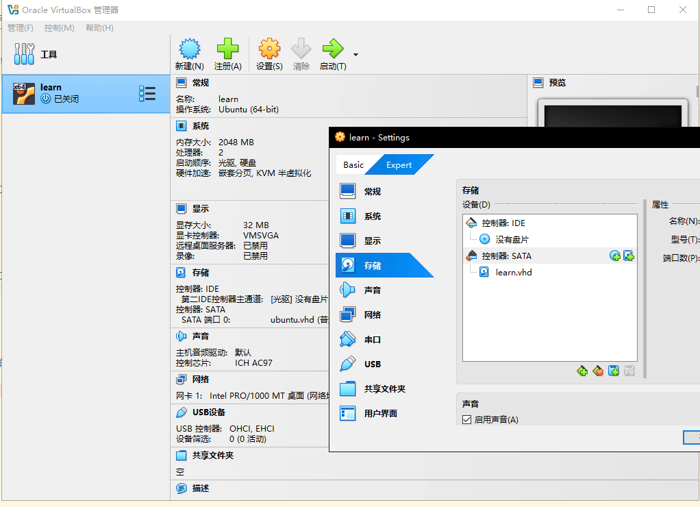
启动虚拟机，观察屏幕是否显示文本信息Assembly.
显示正常，强制退出虚拟机。
主引导扇区执行时的内存布局
根据主引导扇区加载后的内存布局来修改最后一条JMP指令，使它重复执行自己
将主引导扇区程序编译生成列表文件，观察一下内存布局，找到最后一条指令物理地址。
D:\project\assemblyprojs>nasm exam.asm -f bin -o exam.bin -l exam.lst
1 start:
2 00000000 B800B8 mov ax, 0xb800 ;段地址B800
3 00000003 8ED8 mov ds, ax
4
5 00000005 C606000041 mov byte [0x00], 0x41 ;字符A的ASCII编码.意思是把A的编码传送到内存物理地址B8000处
6 0000000A C606010004 mov byte [0x01], 0x04 ;黑底红字，无闪烁
7
8 0000000F C606020073 mov byte [0x02], 's' ;等同于 mov [0x02], 0x73
9 00000014 C606030004 mov byte [0x03], 0x04
......
32 0000005F EA007C0000 jmp 0x0000:0x7c00 ;循环从主引导扇区起始处读取指令。段间直接绝对跳转指令
33
34 current:
35 00000064 00<rep 19Ah> times 510-(current-start) db 0 ;要填充的字节数为512字节减去55AA的2个字节, 再减程序长度。
36
37 000001FE 55AA db 0x55, 0xaa ;用一个db可以定义多个字节，用逗号分隔
实际上我们没有跳那么远程让程序重新执行，可以反复跳到他自己。将跳转的目标地址改为这条指令自身的地址。
列表文件中第1条指令，汇编地址是0，jmp指令的汇编地址是5f。
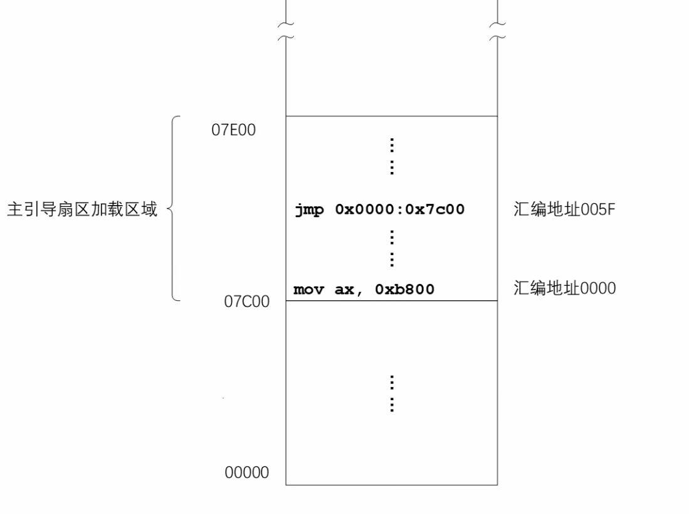
这是内存最低端的视图，因为物理地址是从0开始。主引导扇区加载的位置是从内存物理地址7c00处开始一直到7e00结束。主引导扇区
第1条指令是从7c00处开始，在源文件中的汇编地址是0。指令 jmp 0x0000:0x7c00 在源文件的汇编地址是5f，这条指令在内存中物理
地址是 7c00 + 5f = 7c5f 。得到地址，我们将程序修改如下。
start: mov ax, 0xb800 ;段地址B800 mov ds, ax mov byte [0x00], 0x41 ;字符A的ASCII编码.意思是把A的编码传送到内存物理地址B8000处 mov byte [0x01], 0x0c ;黑底红字，无闪烁 mov byte [0x02], 's' ;等同于 mov [0x02], 0x73 mov byte [0x03], 0x04 mov byte [0x04], 's' mov byte [0x05], 0x04 mov byte [0x06], 'e' mov byte [0x07], 0x04 mov byte [0x08], 'm' mov byte [0x09], 0x04 mov byte [0x0a], 'b' mov byte [0x0b], 0x04 mov byte [0x0c], 'l' mov byte [0x0d], 0x04 mov byte [0x0e], 'y' mov byte [0x0f], 0x04 mov byte [0x10], '.' mov byte [0x11], 0x04 jmp 0x0000:0x7c5f ;跳转到自己。段间直接绝对跳转指令 current: times 510-(current-start) db 0 ;要填充的字节数为512字节减去55AA的2个字节, 再减程序长度。 db 0x55, 0xaa ;用一个db可以定义多个字节，用逗号分隔
编译
D:\project\assemblyprojs>nasm exam.asm -f bin -o exam.bin -l exam.lst
将2进制程序写入虚拟硬盘文件learn.vhd
- 方法1 fixvhdwr.exe 用自定义的程序导入。
- LBA连续直写模式，起始LBA区号为0
- 方法2 其他有效方法
打开bochs调试器bochsdbg.exe进行调试。
#设置断点到物理地址7c00，因为ROM BIOS执行后最后的工作是把主引导扇区数据读入到内存的物理地址7c00处 Next at t=0 (0) [0x0000fffffff0] f000:fff0 (unk. ctxt): jmpf 0xf000:e05b ; ea5be000f0 <bochs:1> b 0x7c00 <bochs:2> c #处理器连续地执行，遇到断点停下 ...... Next at t=17175563 (0) [0x000000007c00] 0000:7c00 (unk. ctxt): mov ax, 0xb800 ; b800b8 #反汇编32条指令 <bochs:3> u /32 0000000000007c00: ( ): mov ax, 0xb800 ; b800b8 0000000000007c03: ( ): mov ds, ax ; 8ed8 0000000000007c05: ( ): mov byte ptr ds:0x0000, 0x41 ; c606000041 0000000000007c0a: ( ): mov byte ptr ds:0x0001, 0x0c; c60601000c 0000000000007c0f: ( ): mov byte ptr ds:0x0002, 0x73 ; c606020073 0000000000007c14: ( ): mov byte ptr ds:0x0003, 0x04 ; c606030004 0000000000007c19: ( ): mov byte ptr ds:0x0004, 0x73 ; c606040073 0000000000007c1e: ( ): mov byte ptr ds:0x0005, 0x04 ; c606050004 0000000000007c23: ( ): mov byte ptr ds:0x0006, 0x65 ; c606060065 0000000000007c28: ( ): mov byte ptr ds:0x0007, 0x04 ; c606070004 0000000000007c2d: ( ): mov byte ptr ds:0x0008, 0x6d ; c60608006d 0000000000007c32: ( ): mov byte ptr ds:0x0009, 0x04 ; c606090004 0000000000007c37: ( ): mov byte ptr ds:0x000a, 0x62 ; c6060a0062 0000000000007c3c: ( ): mov byte ptr ds:0x000b, 0x04 ; c6060b0004 0000000000007c41: ( ): mov byte ptr ds:0x000c, 0x6c ; c6060c006c 0000000000007c46: ( ): mov byte ptr ds:0x000d, 0x04 ; c6060d0004 0000000000007c4b: ( ): mov byte ptr ds:0x000e, 0x79 ; c6060e0079 0000000000007c50: ( ): mov byte ptr ds:0x000f, 0x04 ; c6060f0004 0000000000007c55: ( ): mov byte ptr ds:0x0010, 0x2e ; c60610002e 0000000000007c5a: ( ): mov byte ptr ds:0x0011, 0x04 ; c606110004 0000000000007c5f: ( ): jmpf 0x0000:7c5f ; ea5f7c0000 ...... #设置断点7c5f, 再执行到断点处 <bochs:4> b 0x7c5f <bochs:5> c (0) Breakpoint 2, 0x0000000000007c5f in ?? () Next at t=17175583 (0) [0x000000007c5f] 0000:7c5f (unk. ctxt): jmpf 0x0000:7c5f ; ea5f7c0000 #可以看到屏幕上已经显示自定义文本信息 #下一条将执行的指令一直是跳到物理地址7c5f <bochs:6> s (0) Breakpoint 2, 0x0000000000007c5f in ?? () Next at t=17175584 (0) [0x000000007c5f] 0000:7c5f (unk. ctxt): jmpf 0x0000:7c5f ; ea5f7c0000 <bochs:7> s (0) Breakpoint 2, 0x0000000000007c5f in ?? () Next at t=17175585 (0) [0x000000007c5f] 0000:7c5f (unk. ctxt): jmpf 0x0000:7c5f ; ea5f7c0000 <bochs:8> s (0) Breakpoint 2, 0x0000000000007c5f in ?? () Next at t=17175586 (0) [0x000000007c5f] 0000:7c5f (unk. ctxt): jmpf 0x0000:7c5f ; ea5f7c0000 #退出 <bochs:9> q
打开Virtusbox虚拟机观察。
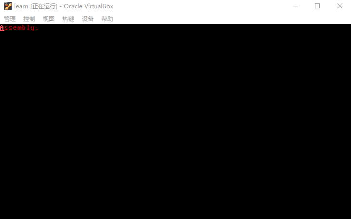
使用标号计算跳转的偏移地址
使用标号来计算JMP指令跳转的偏移地址
开始之前，先看一下，主引导扇区开始执行时，段寄存器CS和指令指针寄存器IP的内容是什么。
打开bochs调试器bochsdbg.exe进行调试。
#设置断点到物理地址7c00，因为ROM BIOS执行后最后的工作是把主引导扇区数据读入到内存的物理地址7c00处 #设置断点7c00 再执行到断点处 Next at t=0 (0) [0x0000fffffff0] f000:fff0 (unk. ctxt): jmpf 0xf000:e05b ; ea5be000f0 <bochs:1> b 0x7c00 <bochs:2> c #处理器连续地执行，遇到断点停下 ...... Next at t=17175563 (0) [0x000000007c00] 0000:7c00 (unk. ctxt): mov ax, 0xb800 ; b800b8 # mov ax, 0xb800~ 这是主引导扇区的第1条指令，它的逻辑地址是 ~0000:7c00~ , 换句话 #说段寄存器CS的内容是0，指令指针寄存器IP的内容是7c00 #查看段寄存器, CS的内容是0000 <bochs:3> sreg es:0x0000, dh=0x00009300, dl=0x0000ffff, valid=1 Data segment, base=0x00000000, limit=0x0000ffff, Read/Write, Accessed cs:0x0000, dh=0x00009300, dl=0x0000ffff, valid=1 Data segment, base=0x00000000, limit=0x0000ffff, Read/Write, Accessed ss:0x0000, dh=0x00009300, dl=0x0000ffff, valid=7 Data segment, base=0x00000000, limit=0x0000ffff, Read/Write, Accessed ds:0x0000, dh=0x00009300, dl=0x0000ffff, valid=1 Data segment, base=0x00000000, limit=0x0000ffff, Read/Write, Accessed fs:0x0000, dh=0x00009300, dl=0x0000ffff, valid=1 Data segment, base=0x00000000, limit=0x0000ffff, Read/Write, Accessed gs:0x0000, dh=0x00009300, dl=0x0000ffff, valid=1 Data segment, base=0x00000000, limit=0x0000ffff, Read/Write, Accessed ldtr:0x0000, dh=0x00008200, dl=0x0000ffff, valid=1 tr:0x0000, dh=0x00008b00, dl=0x0000ffff, valid=1 gdtr:base=0x00000000000f9e67, limit=0x30 idtr:base=0x0000000000000000, limit=0x3ff #查看通用寄存器，rip的低16位对应着8086的IP的内容为7c00 <bochs:4> r rax: 00000000_0000aa55 rbx: 00000000_00000000 rcx: 00000000_00090000 rdx: 00000000_00000080 rsp: 00000000_0000ffd6 rbp: 00000000_00000000 rsi: 00000000_000e0000 rdi: 00000000_0000ffac r8 : 00000000_00000000 r9 : 00000000_00000000 r10: 00000000_00000000 r11: 00000000_00000000 r12: 00000000_00000000 r13: 00000000_00000000 r14: 00000000_00000000 r15: 00000000_00000000 rip: 00000000_00007c00 eflags: 0x00000082: id vip vif ac vm rf nt IOPL=0 of df if tf SF zf af pf cf #退出 <bochs:5> q
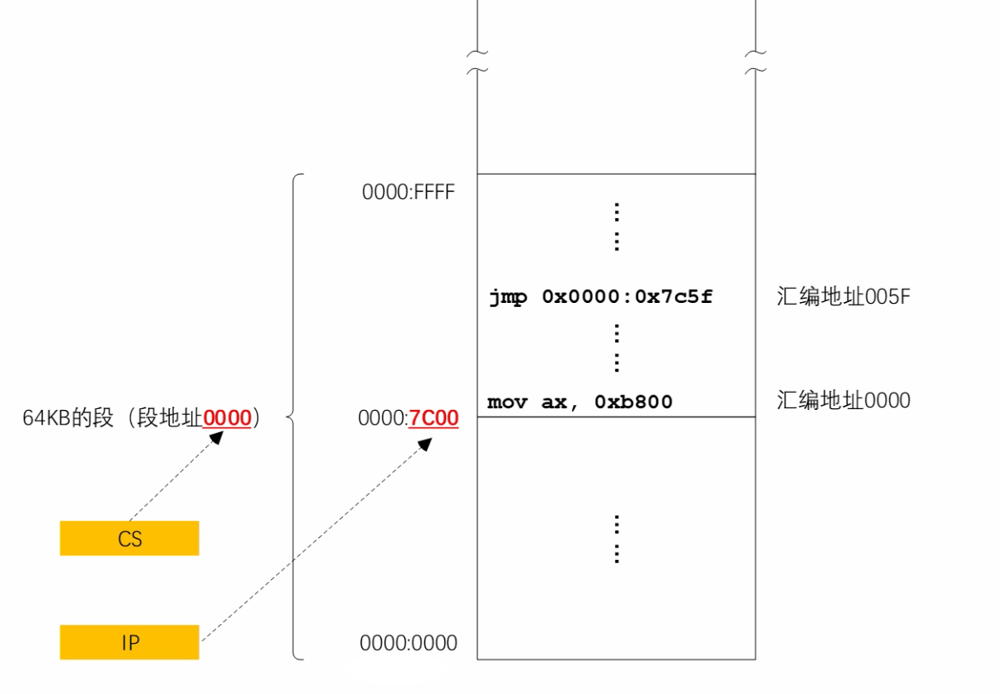
上图，是位于内存最低端的段。段地址是0000，偏移地址从0000到FFFF，64千字节的段。
在计算机处理器加电或者复位后，将首先从ROM BIOS中执行，然后把硬盘主引导扇区的内容加载到内存里，而且是从段内偏移地址7c00处开始加载的。
当主引导扇区执行时，处理器CS是指向这个段的(0000)，同时指令指针寄存器指向这个加载的位置，ip的内容是7c00。 jmp 0x0000:0x7c5f 跳转
之后还是在这个段里，段内偏移地址7c5f = 源文件指令的汇编地址5f +第1条指令段内偏移地址7c00
标号代表着它所在那条指令的汇编地址，使用了标号再也不用手工计算偏移地址了，还可以向任何地方跳转。
5f可以变成一个标号。程序修改如下
start: mov ax, 0xb800 ;段地址B800 mov ds, ax mov byte [0x00], 0x41 ;字符A的ASCII编码.意思是把A的编码传送到内存物理地址B8000处 mov byte [0x01], 0x0c ;黑底红字，无闪烁 mov byte [0x02], 's' ;等同于 mov [0x02], 0x73 mov byte [0x03], 0x04 mov byte [0x04], 's' mov byte [0x05], 0x04 mov byte [0x06], 'e' mov byte [0x07], 0x04 mov byte [0x08], 'm' mov byte [0x09], 0x04 mov byte [0x0a], 'b' mov byte [0x0b], 0x04 mov byte [0x0c], 'l' mov byte [0x0d], 0x04 mov byte [0x0e], 'y' mov byte [0x0f], 0x04 mov byte [0x10], '.' mov byte [0x11], 0x04 again: jmp 0x0000:0x7c00+again ;跳转到自己。段间直接绝对跳转指令 current: times 510-(current-start) db 0 ;要填充的字节数为512字节减去55AA的2个字节, 再减程序长度。 db 0x55, 0xaa ;用一个db可以定义多个字节，用逗号分隔
使用bochs虚拟机进行调试。过程略
使用寄存器的绝对间接近跳转
认识和使用另一种段内的跳转指令：绝对间跳转
jmp 0x0000:0x7c00+again ;跳转到自己。段间直接绝对跳转指令
段间直接绝对跳转指令是从一个代码段跳转到另一个代码段地址处执行，直接给出了目标位置的绝对地址。
就我们这个程序而言是很费事的，因为这些指令都在一个段内，可以在不改变段寄存器CS的情况，从一个地方跳到另一个地址就行了。 相对于段之间的跳转，在段内的跳转更常见，只是在一个代码段内跳转。
8086处理器提供了一种新的跳转形式，绝对间接近跳转，可以根据通用寄存器的内容来跳转。如可以根据bx的内容进行跳转。
- 绝对，给出的地址是目标地址的实际偏移地址，绝对地址
- 间接，跳转的目标位置不是在指令中直接给出的，而是根据寄存器中内容间接给出
- 近，跳转到不太远的地方，段的内容
程序修改如下
start: mov ax, 0xb800 ;段地址B800 mov ds, ax mov byte [0x00], 0x41 ;字符A的ASCII编码.意思是把A的编码传送到内存物理地址B8000处 mov byte [0x01], 0x0c ;黑底红字，无闪烁 mov byte [0x02], 's' ;等同于 mov [0x02], 0x73 mov byte [0x03], 0x04 mov byte [0x04], 's' mov byte [0x05], 0x04 mov byte [0x06], 'e' mov byte [0x07], 0x04 mov byte [0x08], 'm' mov byte [0x09], 0x04 mov byte [0x0a], 'b' mov byte [0x0b], 0x04 mov byte [0x0c], 'l' mov byte [0x0d], 0x04 mov byte [0x0e], 'y' mov byte [0x0f], 0x04 mov byte [0x10], '.' mov byte [0x11], 0x04 mov bx, 0x7c00+again again: jmp bx ;跳转到自己。绝对间接近跳转指令 current: times 510-(current-start) db 0 ;要填充的字节数为512字节减去55AA的2个字节, 再减程序长度。 db 0x55, 0xaa ;用一个db可以定义多个字节，用逗号分隔
编译
nasm exam.asm -f bin -o exam.bin -l exam.lst
将程序写入主引导扇区，打开bochs调试
#设置断点7c00 再执行到断点处 Next at t=0 (0) [0x0000fffffff0] f000:fff0 (unk. ctxt): jmpf 0xf000:e05b ; ea5be000f0 <bochs:1> b 0x7c00 <bochs:2> c #处理器连续地执行，遇到断点停下 ...... Next at t=17175563 (0) [0x000000007c00] 0000:7c00 (unk. ctxt): mov ax, 0xb800 ; b800b8 #反汇编32条指令，观察指令和对应的物理地址，jmp指令的物理地址是7c62，跳转自己 <bochs:3> u /32 0000000000007c00: ( ): mov ax, 0xb800 ; b800b8 0000000000007c03: ( ): mov ds, ax ; 8ed8 0000000000007c05: ( ): mov byte ptr ds:0x0000, 0x41 ; c606000041 0000000000007c0a: ( ): mov byte ptr ds:0x0001, 0x0c ; c60601000c 0000000000007c0f: ( ): mov byte ptr ds:0x0002, 0x73 ; c606020073 0000000000007c14: ( ): mov byte ptr ds:0x0003, 0x04 ; c606030004 0000000000007c19: ( ): mov byte ptr ds:0x0004, 0x73 ; c606040073 0000000000007c1e: ( ): mov byte ptr ds:0x0005, 0x04 ; c606050004 0000000000007c23: ( ): mov byte ptr ds:0x0006, 0x65 ; c606060065 0000000000007c28: ( ): mov byte ptr ds:0x0007, 0x04 ; c606070004 0000000000007c2d: ( ): mov byte ptr ds:0x0008, 0x6d ; c60608006d 0000000000007c32: ( ): mov byte ptr ds:0x0009, 0x04 ; c606090004 0000000000007c37: ( ): mov byte ptr ds:0x000a, 0x62 ; c6060a0062 0000000000007c3c: ( ): mov byte ptr ds:0x000b, 0x04 ; c6060b0004 0000000000007c41: ( ): mov byte ptr ds:0x000c, 0x6c ; c6060c006c 0000000000007c46: ( ): mov byte ptr ds:0x000d, 0x04 ; c6060d0004 0000000000007c4b: ( ): mov byte ptr ds:0x000e, 0x79 ; c6060e0079 0000000000007c50: ( ): mov byte ptr ds:0x000f, 0x04 ; c6060f0004 0000000000007c55: ( ): mov byte ptr ds:0x0010, 0x2e ; c60610002e 0000000000007c5a: ( ): mov byte ptr ds:0x0011, 0x04 ; c606110004 0000000000007c5f: ( ): mov bx, 0x7c62 ; bb627c 0000000000007c62: ( ): jmp bx ; ffe3 0000000000007c64: ( ): add byte ptr ds:[bx+si], al ; 0000 #设置断点，执行到mov bx, 0x7c62停下来 <bochs:4> b 0x7c5f <bochs:5> c (0) Breakpoint 2, 0x0000000000007c5f in ?? () Next at t=17175583 (0) [0x000000007c5f] 0000:7c5f (unk. ctxt): mov bx, 0x7c62 ; bb627c #不同的跳转指令，他们的操作码是不一样的。跳转到bx的操作码是ffe3 <bochs:6> s Next at t=17175584 (0) [0x000000007c62] 0000:7c62 (unk. ctxt): jmp bx ; ffe3 <bochs:7> s Next at t=17175585 (0) [0x000000007c62] 0000:7c62 (unk. ctxt): jmp bx ; ffe3 <bochs:8> s Next at t=17175586 (0) [0x000000007c62] 0000:7c62 (unk. ctxt): jmp bx ; ffe3 <bochs:9> s Next at t=17175587 (0) [0x000000007c62] 0000:7c62 (unk. ctxt): jmp bx ; ffe3 #同时要说明的是，这条指令执行时不改变段寄存器CS的内容，只是改变 #指令指针寄存器IP的内容，所以它是段内绝对间接近跳转指令 #只要虚拟机不关机就会永远执行这条指令 #退出 <bochs:11> q
使用相对偏移量的短跳转和近跳转
引入另一种更方便的跳转形式，这种跳转形式不使用绝对地址，而是使用 到目标位置的相对偏移量。
段间直接绝对跳转和绝对间接近跳转都要使用绝对段内地址很不方便。主引导扇区程序有点特殊，我们知道加载的位置是 7c00，可以用7c00加上汇编地址加得出段的偏移地址。但是，在多时候程序从什么地址加载是不知道的， 它的偏移地址很难计算。
使用标号是最方便的。
目标位置相对于这条跳转指令，它们之间的距离是不变的。也就是相对偏移量是不会改变的。
jmp 标号
像这种指令，在编译时采用的不是绝对偏移地址，也不是标号的汇编地址，而是相对偏移量。
相对偏移量计算：标号所在指令的汇编地址减去jmp指令后面的汇编地址。相减的结果可能是正数也可能是负数。
如果跳不太远，相减后小128小于-127，对应的机器指令是2个字节，第1个字节是EB，第2个字节是8位的相对偏移量。这样的跳转称为
相对短跳转。指令的汇编格式是 jmp short start ，其中short可不写，编译器可以自己选择。
jmp short 标号 ;短跳转。机器指令2个字节，EB 和 8位的相对偏移量 jmp near 标号 ;近跳转。操作码E9，和16位的相对偏移量
程序修改如下
start: mov ax, 0xb800 ;段地址B800 mov ds, ax mov byte [0x00], 0x41 ;字符A的ASCII编码.意思是把A的编码传送到内存物理地址B8000处 mov byte [0x01], 0x0c ;黑底红字，无闪烁 mov byte [0x02], 's' ;等同于 mov [0x02], 0x73 mov byte [0x03], 0x04 mov byte [0x04], 's' mov byte [0x05], 0x04 mov byte [0x06], 'e' mov byte [0x07], 0x04 mov byte [0x08], 'm' mov byte [0x09], 0x04 mov byte [0x0a], 'b' mov byte [0x0b], 0x04 mov byte [0x0c], 'l' mov byte [0x0d], 0x04 mov byte [0x0e], 'y' mov byte [0x0f], 0x04 mov byte [0x10], '.' mov byte [0x11], 0x04 again: jmp near start ;跳转到自己。相对偏移量跳转。E9 16位的相对偏移量 current: times 510-(current-start) db 0 ;要填充的字节数为512字节减去55AA的2个字节, 再减程序长度。 db 0x55, 0xaa ;用一个db可以定义多个字节，用逗号分隔
编译
nasm exam.asm -f bin -o exam.bin -l exam.lst
将程序写入主引导扇区，打开bochs调试
#设置断点7c00 再执行到断点处 Next at t=0 (0) [0x0000fffffff0] f000:fff0 (unk. ctxt): jmpf 0xf000:e05b ; ea5be000f0 <bochs:1> b 0x7c00 <bochs:2> c #处理器连续地执行，遇到断点停下 ...... Next at t=17175563 (0) [0x000000007c00] 0000:7c00 (unk. ctxt): mov ax, 0xb800 ; b800b8 #反汇编32条指令，观察指令和对应的物理地址 <bochs:3> u /32 0000000000007c00: ( ): mov ax, 0xb800 ; b800b8 0000000000007c03: ( ): mov ds, ax ; 8ed8 0000000000007c05: ( ): mov byte ptr ds:0x0000, 0x41 ; c606000041 0000000000007c0a: ( ): mov byte ptr ds:0x0001, 0x0c ; c60601000c 0000000000007c0f: ( ): mov byte ptr ds:0x0002, 0x73 ; c606020073 0000000000007c14: ( ): mov byte ptr ds:0x0003, 0x04 ; c606030004 0000000000007c19: ( ): mov byte ptr ds:0x0004, 0x73 ; c606040073 0000000000007c1e: ( ): mov byte ptr ds:0x0005, 0x04 ; c606050004 0000000000007c23: ( ): mov byte ptr ds:0x0006, 0x65 ; c606060065 0000000000007c28: ( ): mov byte ptr ds:0x0007, 0x04 ; c606070004 0000000000007c2d: ( ): mov byte ptr ds:0x0008, 0x6d ; c60608006d 0000000000007c32: ( ): mov byte ptr ds:0x0009, 0x04 ; c606090004 0000000000007c37: ( ): mov byte ptr ds:0x000a, 0x62 ; c6060a0062 0000000000007c3c: ( ): mov byte ptr ds:0x000b, 0x04 ; c6060b0004 0000000000007c41: ( ): mov byte ptr ds:0x000c, 0x6c ; c6060c006c 0000000000007c46: ( ): mov byte ptr ds:0x000d, 0x04 ; c6060d0004 0000000000007c4b: ( ): mov byte ptr ds:0x000e, 0x79 ; c6060e0079 0000000000007c50: ( ): mov byte ptr ds:0x000f, 0x04 ; c6060f0004 0000000000007c55: ( ): mov byte ptr ds:0x0010, 0x2e ; c60610002e 0000000000007c5a: ( ): mov byte ptr ds:0x0011, 0x04 ; c606110004 0000000000007c5f: ( ): jmp .-98 (0x00007c00) ; e99eff 0000000000007c62: ( ): add byte ptr ds:[bx+si], al ; 0000 #e99eff一共3个字节。其中e9是操作码，9eff是相对偏移量。
偏移量计算, 查看编译后的列表文件
1 start: 2 00000000 B800B8 mov ax, 0xb800 ;段地址B800 ...... 32 again: 33 0000005F E99EFF jmp near start ;跳转到自己。相对偏移量跳转。E9 16位的相对偏移量 36 00000062 00<rep 19Ch> times 510-(current-start) db 0 ;要填充的字节数为512字节减去55AA的2个字节, 再减程序长度。
相对偏移量 = 目标汇编地址(0) - jmp指令之后的汇编地址(62) = FFFF FFFF FFFF FF9E = 指令中只能取16位ff9e = -98
8086是低端字节序的，读的时候从向前读。 9eff 。 16进制的ff9e等于10进制-98
这条jmp指令之后的汇编地址相对于第1条指令，它们的相对偏移量是98个字节。因为方向原因所以是个负数。
设置新断点
<bochs:4> b 0x7c5f <bochs:5> c (0) Breakpoint 2, 0x0000000000007c5f in ?? () Next at t=17175583 (0) [0x000000007c5f] 0000:7c5f (unk. ctxt): jmp .-98 (0x00007c00) ; e99eff #当前 jmp -98执行时，是用指令指针寄存器IP的内容+指令中指令的偏移量得到目标位置处的内存偏移地址。 #指令指针寄存器IP的内容不是7c5f，而是IP的内容等于IP的内容+当前指令的长度，即IP内容自动变为7c5f+16=7c62 #所以目标位置内存偏移地址为=7c62+ff9e=17c00，指令指针的内容只有16位，取7c00 <bochs:6> s (0) Breakpoint 1, 0x0000000000007c00 in ?? () Next at t=17175584 (0) [0x000000007c00] 0000:7c00 (unk. ctxt): mov ax, 0xb800 ; b800b8 <bochs:7> s Next at t=17175585 (0) [0x000000007c03] 0000:7c03 (unk. ctxt): mov ds, ax ; 8ed8 <bochs:8> s Next at t=17175586 (0) [0x000000007c05] 0000:7c05 (unk. ctxt): mov byte ptr ds:0x0000, 0x41 ; c606000041
所以跳转到自己话，程序修改如下
start: mov ax, 0xb800 ;段地址B800 mov ds, ax mov byte [0x00], 0x41 ;字符A的ASCII编码.意思是把A的编码传送到内存物理地址B8000处 mov byte [0x01], 0x0c ;黑底红字，无闪烁 mov byte [0x02], 's' ;等同于 mov [0x02], 0x73 mov byte [0x03], 0x04 mov byte [0x04], 's' mov byte [0x05], 0x04 mov byte [0x06], 'e' mov byte [0x07], 0x04 mov byte [0x08], 'm' mov byte [0x09], 0x04 mov byte [0x0a], 'b' mov byte [0x0b], 0x04 mov byte [0x0c], 'l' mov byte [0x0d], 0x04 mov byte [0x0e], 'y' mov byte [0x0f], 0x04 mov byte [0x10], '.' mov byte [0x11], 0x04 again: jmp near again ;跳转到自己。相对偏移量跳转。E9 16位的相对偏移量 current: times 510-(current-start) db 0 ;要填充的字节数为512字节减去55AA的2个字节, 再减程序长度。 db 0x55, 0xaa ;用一个db可以定义多个字节，用逗号分隔
在屏幕上显示数字
主要内容
- 显示数字的基本原理
- 无符号数除法指令div
- 在调试器里验证除法操作
- 异或指令xor的用法
- 加法指令add的用法
- 使用标号访问内存数据
- 段超越前缀的使用
- 显示标号的汇编地址
显示数字的基本原理
认识数字和数字字符的区别，以及如何将数字拆分为独立的数位，为显示数字做准备
数字1 -> 0000 0001 (0x01) 字符1 -> 0011 0001 (0x31)
在ASCII字符集中只有0到9这10个数字字符。这意味着如果想在屏幕上显示数字125，需要在屏幕分别显示3个数字字符1，2，5。 也就是分别向显存写入这3个字符的编码和颜色属性。
125如何变成3个独立的字符？分2步进行
- 第一步：将数字125分解为3个数字1,2,5
125 -> 0111 1101 1 -> 0000 0001 2 -> 0000 0010 5 -> 0000 0101
- 第二步：将数字1、2和5分别转换为对应的数字字符
- 数字0到9对应的数字字符编码为0x30到0x39。因此，只需要将数字加上0x30得到了 它对应的数字字符编码。
- 比如数字5的二进制是0000 0101，加上0x30后的结果为0011 0101，这就是数字字符5的编码。
第一步：将数字125分解为3个数字1,2,5
传统上，要分解数字的每一个数位，要除以10，取余。
范例：125分解
125 / 10 = 商12 余 5 12 / 10 = 商1 余2 1 / 10 = 商0 余1
无符号数除法指令div
了解无符号整数除法指令div
div指令只能用于无符号整数的操作。div指令只需要一个操作数，即除数所在寄存器或者内存地址。 被除数在哪里要由除数的长度决定。
格式
div 除数所在的寄存器或者内存地址
除数长度是8位
- 如果在指令中指定的是8位寄存器或者8位操作数的内存地址，则意味着被除数在寄存器AX里。
- 相除后，商在寄存器AL里，余数在寄存器AH里。
范例：div 除数长度为8位
div bh #bh是8位的寄存器，存放的是除数，那么被除数存放在AX里 #AX中内容除以BH中内容，相除后，商在AL中，余数在AH中 div byte [0x2002] #除数在内存中，从内存地址0x2002处取1个字节 #AX中内容除以0x2002地址的8位除数，相除后，商在AL中，余数在AH中
除数长度是16位
- 如果在指令中指定的是16位寄存器或者16位操作数的内存地址，则意味着被除数是32位的，低 16位在寄存器AX里；高16位在寄存器DX里
- 相除后，商在寄存器AX里，余数在寄存器DX里。
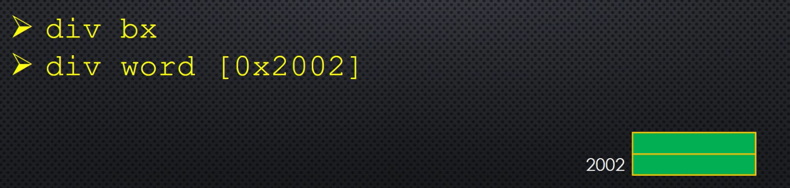
范例：div 除数长度为16位
div bx #bx是16位的寄存器，存放的是除数，那么被除数是32位的，低16位在寄存器AX里；高16位在寄存器DX里 #用DX和AX组合成32位的被除数除以BX中内容，相除后，商在AX中，余数在DX中 div word [0x2002] #除数在内存中，从内存地址0x2002处取1个字 #用DX和AX组合成32位的被除数除以0x2002地址的16位除数，相除后，商在AX中，余数在DX中
除数长度是32位
8086不支持的，它是16位处理器，从80386开始支持
- 如果在指令中指定的是32位寄存器或者32位操作数的内存地址，则意味着被除数是64位的，低 32位在寄存器EAX里；高32位在寄存器EDX里
- 相除后，商在寄存器EAX里，余数在寄存器EDX里。
范例：div 除数长度为32位
div ebx #ebx是32位的寄存器，存放的是除数，那么被除数是64位的，低32位在寄存器EAX里；高32位在寄存器EDX里 #用EDX和EAX组合成64位的被除数除以有EBX中内容，相除后，商在EAX中，余数在EDX中 div dword [0x2002] #除数在内存中，从内存地址0x2002处取4个字节组合出32位操作数 #用EDX和EAX组合成64位的被除数除以0x2002地址的32位除数，相除后，商在EAX中，余数在EDX中
除数长度是64位
8086和32位处理器不支持，只有64位处理器支持
- 如果在指令中指定的是64位寄存器或者64位操作数的内存地址，则意味着被除数是128位的，低 64位在寄存器RAX里；高64位在寄存器RDX里
- 相除后，商在寄存器RAX里，余数在寄存器RDX里。
范例：div 除数长度为64位
div rbx #ebx是64位的寄存器，存放的是除数，那么被除数是128位的，低64位在寄存器RAX里；高64位在寄存器RDX里 #用RDX和RAX组合成128位的被除数除以有RBX中内容，相除后，商在RAX中，余数在RDX中 div qword [0x2002] #除数在内存中，从内存地址0x2002处取8个字节组合出64位操作数 #用RDX和RAX组合成128位的被除数除以0x2002地址的64位除数，相除后，商在RAX中，余数在RDX中
在调试器里验证除法操作
通过在调试器里跟踪除法指令的执行，来加深对这条指令的认识
;计算378除以37的结果 mov ax, 378 ;378传送到ax，被除数 mov bl, 37 ;37传送到bl，除数 div bl ;AL=商(10), AH=余数(8)
将这个3行代码放在调试器中运行。为此把代码放到主引导扇区里，做成主引导扇区程序，再写入到虚拟硬盘文件中，通过bochs来调试。
exam.asm
start: ;计算378除以37的结果 mov ax, 378 mov bl, 37 div bl ;AL=商(10), AH=余数(8) current: times 510-(current-start) db 0 db 0x55, 0xaa
编译
D:\project\assemblyprojs>nasm exam.asm -f bin -o exam.bin -l exam.lst
将2进制程序写入虚拟硬盘文件learn.vhd
- 方法1 fixvhdwr.exe 用自定义的程序导入。
- LBA连续直写模式，起始LBA区号为0
- 方法2 其他有效方法
打开bochs调试器bochsdbg.exe进行调试。
#设置断点到物理地址7c00，因为ROM BIOS执行后最后的工作是把主引导扇区数据读入到内存的物理地址7c00处 Next at t=0 (0) [0x0000fffffff0] f000:fff0 (unk. ctxt): jmpf 0xf000:e05b ; ea5be000f0 <bochs:1> b 0x7c00 <bochs:2> c #处理器连续地执行，遇到断点停下 ...... Next at t=17175563 #16进制的17a等于10进制的378 (0) [0x000000007c00] 0000:7c00 (unk. ctxt): mov ax, 0x017a ; b87a01 #单步执行 <bochs:3> s Next at t=17175564 (0) [0x000000007c03] 0000:7c03 (unk. ctxt): mov bl, 0x25 ; b325 #查看mov ax, 0x017a执行后，寄存器内容 <bochs:4> r rax: 00000000_0000017a #rax的低16位ax内容为017a，10进制的378 rbx: 00000000_00000000 ..... rip: 00000000_00007c03 #查看mov bl, 0x25执行后，寄存器内容 <bochs:5> s Next at t=17175565 (0) [0x000000007c05] 0000:7c05 (unk. ctxt): div al, bl ; f6f3 <bochs:6> r rax: 00000000_0000017a rbx: 00000000_00000025 ;rbx的低8位bl内容为25，即10进制37 ...... rip: 00000000_00007c05 #查看div al, bl执行后，寄存器内容。这是bochs虚拟机自己定义的格式，实际上是div bl <bochs:7> s Next at t=17175566 (0) [0x000000007c07] 0000:7c07 (unk. ctxt): add byte ptr ds:[bx+si], al ; 0000 <bochs:8> r rax: 00000000_0000080a #378除以37，商在al中，rax的低8位0a，10进制的10; 余数在ah中，rax的高8位08，10进制的8 rbx: 00000000_00000025 ...... rip: 00000000_00007c07
异或指令xor的用法
;计算65535除以10的结果 mov ax, 65535 mov bl, 10 div bl ;AL=商(6553), AH=余数(5)
AL是8位的不能存6553这么大的数字。改用16位除数。
start: ;计算65535除以10的结果 mov ax, 65535 mov dx, 0 mov bx, 10 div bx ;AX=商(6553), DX=余数(5) current: times 510-(current-start) db 0 db 0x55, 0xaa
上面 mov dx, 0 也可以改成 xor dx, dx, 执行速度比 mov dx, 0要快
异或=XOR=eXclusive OR
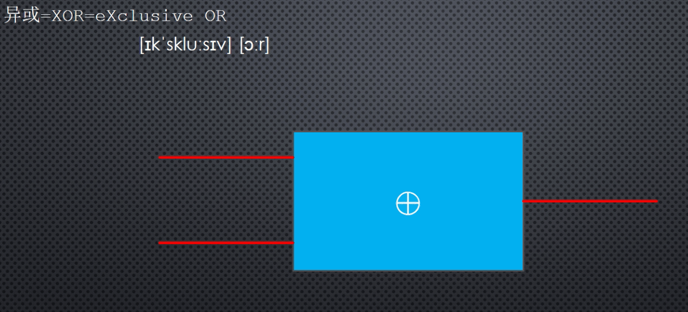
异或电路有2个输入1个输出。当输入相同时，输出为0；当输入不同时，输出为1 0 ^ 0 = 0 1 ^ 1 = 0 0 ^ 1 = 1 1 ^ 0 = 1 #异或操作可在2个数之间进行 129 ^ 127 = ? 1000 0001 0111 1111 ^ --------- 1111 1110 254
异或指令格式
xor r/m, r/m/imm #说明 r 寄存器 m 内存地址 imm 立即数 异或的结果保存在左操作数中。 注意：2个操作数所指定的数据长度必须相同
范例：xor异或
xor bh, al #bh的值和al的值做异或操作，结果在bh中 xor cx, dx #cx的值和dx的值做异或操作，结果在cx中 xor ax, 3 #ax的值和立即数3做异或操作，结果在ax中. 因为ax是16位寄存器， #所以为了保持一致，立即数3被当成16位的数字参与运算 xor word [0x2002], 67 #把从内存地址2002开始的一个字和立即数67做异或操作，结果返回到原来的内存地址保存。 #因为内存操作数是用word来修饰的，因此操作数的长度是16位的字，为了保持一致，立即数 #被当成16位的数字参与运算 xor si, [0x2002] #把si和内存里的数字做异或运算，结果在si中。 #因为si的长度是16位的，所以必须从内存地址2002处读取一个16位的字参与运算。
xor dx, dx 两个操作数都一样做异或，生成一个所有比特为0的结果，覆盖寄存器dx中原有的内容。2个操作数都是寄存器，执行起来比较快。
exam.asm 可修改为
start: ;计算65535除以10的结果 mov ax, 65535 xor dx, dx ;等价于mov dx, 0, 执行速度更快 mov bx, 10 div bx ;AX=商(6553), DX=余数(5) current: times 510-(current-start) db 0 db 0x55, 0xaa
加法指令add的用法
因为工作需要引入加法指令add并介绍它的功能和用法
在屏幕上显示数字65535，就必须把它的每一个数位分解出来。上节已经用div分解出第一个 数位5。 这个数位保存在寄存器DX中，只需要取DX的低8位DL。要在屏幕上显示这个数位，就要加上0x30就可以转换为数字字符编码。
DX 00000000 00000101 高8位DH 低8位DL
exam.asm可修改为
start: ;在屏幕上显示数字65535 mov ax, 65535 xor dx, dx ;等价于mov dx, 0 mov bx, 10 div bx ;AX=商(6553), DX=余数(5) add dl, 0x30 ;将数字转换为对应的数字字符 current: times 510-(current-start) db 0 db 0x55, 0xaa
add指令介绍
add格式
add r/m, r/m/imm #说明 r 寄存器 m 内存地址 imm 立即数 结果保存在左操作数中 说明：2个操作数所指的数据长度必须相同，操作数不能同时为内存地址
范例：add指令
add bh, al #bh的值和al的值相加，结果在bh中 add cx, dx #cx的值和dx的值相加，结果在cx中 add ax, 3 #ax的值和立即数3相加，结果在ax中. 因为ax是16位寄存器， #所以为了保持一致，立即数3被当成16位的数字参与运算 add word [0x2002], 67 #把从内存地址2002开始的一个字和立即数67相加，结果返回到原来的内存地址保存。 #因为内存操作数是用word来修饰的，因此操作数的长度是16位的字，为了保持一致，立即数 #被当成16位的数字参与运算 add si, [0x2002] #把si和内存里的数字相加，结果在si中。 #因为si的长度是16位的，所以必须从内存地址2002处读取一个16位的字参与运算。
使用标号访问内存数据
如何在程序中保留内存空间，并使用标号访问这些内存空间
每分解一位就显示的话，在屏幕上显示是反的。可以把每次分解的数位转换成字符编码后，临时存在在别的地方。 全部转换完成后，再按正解的顺序加以显示。
保存到哪？8086的寄存器肯定不是够用的，我们已经占用了bx, dx,ax,剩下的是si,di,dp,sp，但剩下的都是16位的而且只能做为16位来用，不用做为8位。 所以用来保存8位的字符编码并不是很方便。
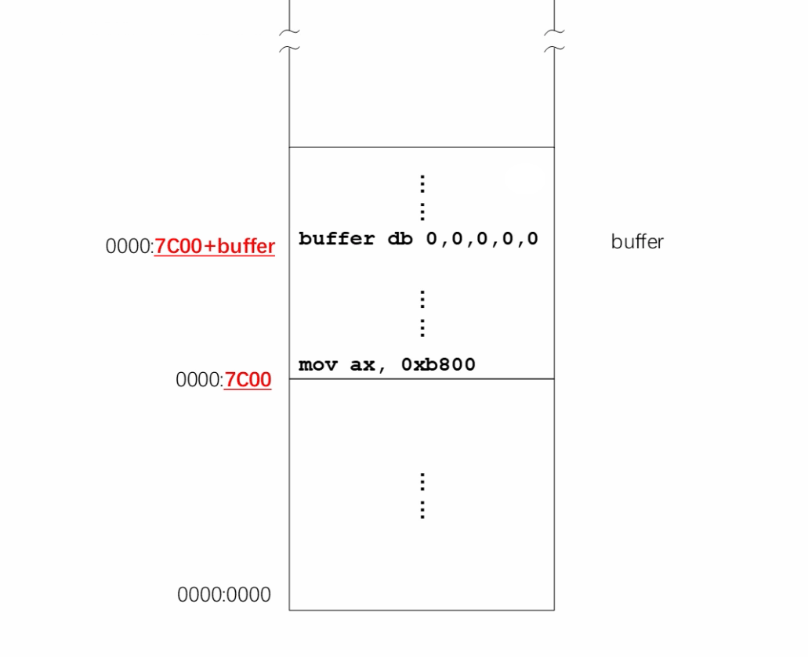
考虑到内存空间很大，可以将这些数位保存到内存里。可以伪指令db来开辟内存空间 buffer db 0, 0, 0, 0, 0 。使用标号来找到它们。
我们知道标号代表汇编地址，这标号buffer仅仅代表第一个字节的汇编地址，即第1个0的汇编地址。
在访问内存时，标号可以用来计算程序运算时的偏移地址。db 0,0, 0,0,0 中第1个0，它的段地址是0，段偏移地址是 0x7c00+buffer。
exam.asm
start: ;在屏幕上显示数字65535 mov ax, 65535 xor dx, dx ;等价于mov dx, 0 mov bx, 10 div bx ;AX=商(6553), DX=余数(5) add dl, 0x30 ;将数字转换为对应的数字字符 ;指定数据段寄存ds内容， 0 mov cx, 0 mov ds, cx mov [0x7c00+buffer], dl ;将dl中的字符编码0x35传送到段内这个偏移地址处。即第1个0处 ;分解第2个数位，将数位对应字符存放在 db 0,0,0,0,0 的第2个字节里 xor dx, dx ;dx清零，因为它是被除数的高16位 div bx add dl, 0x30 ;将数字转换为对应的数字字符 mov [0x7c00+buffer+1], dl ;将dl中的字符编码0x33传送到段内这个偏移地址处。即第2个0处 ;分解第3个数位，将数位对应字符存放在 db 0,0,0,0,0 的第3个字节里 xor dx, dx ;dx清零，因为它是被除数的高16位 div bx add dl, 0x30 ;将数字转换为对应的数字字符 mov [0x7c00+buffer+2], dl ;将dl中的字符编码0x35传送到段内这个偏移地址处。即第3个0处 ;分解第4个数位，将数位对应字符存放在 db 0,0,0,0,0 的第4个字节里 xor dx, dx ;dx清零，因为它是被除数的高16位 div bx add dl, 0x30 ;将数字转换为对应的数字字符 mov [0x7c00+buffer+3], dl ;将dl中的字符编码0x35传送到段内这个偏移地址处。即第4个0处 ;分解最后一个数位，将数位对应字符存放在 db 0,0,0,0,0 的第5个字节里 xor dx, dx ;dx清零，因为它是被除数的高16位 div bx add dl, 0x30 ;将数字转换为对应的数字字符 mov [0x7c00+buffer+4], dl ;将dl中的字符编码0x36传送到段内这个偏移地址处。即第5个0处 buffer db 0, 0, 0, 0,0 ;开辟5个字节空间 current: times 510-(current-start) db 0 db 0x55, 0xaa
段超越前缀的使用
如何使用段超越前缀在两个数据段之间协作工作
上一节中，我们已经完成了数位的分解并将数字字符存放在内存中。这一节我们将数字字符写入显存，然后就能在显示器上看到了。
因为intel处理器不允许指定的2个操作数都是内存地址，所以要使用寄存器中转。
取字符，传送第1个字符
- 首先把最后一次分解出来的字符，临时保存到寄存器al中。
mov al, [0x7c00+buffer+4] - 将寄存器的字符编码传送到显存内偏移地址为0的地方。显存的访问也是按照段地址加偏移地址进行
- 显存的段地址是B800。在访问显存前，必须把B800传送到数据段寄存器DS中，传送段地址也必须要用通用寄存器中转，不能直接传送。
mov cx, 0xb800,mov ds, cx
- 显存的段地址是B800。在访问显存前，必须把B800传送到数据段寄存器DS中，传送段地址也必须要用通用寄存器中转，不能直接传送。
- 最后，将寄存器AL中的字符编码写入显存内偏移地址为0的地方。
mov [0x00], al- 同时再写入一个颜色属性，
mov byte [0x01], 0x2f绿底白字
- 同时再写入一个颜色属性，
取下一个字符时
- 将数据段寄存器变回来
mov cx, 0,mov ds, cx，才能取到第2个字符 - 取第2个字符
mov al, [0x7c00+buffer+3] - 指向显存的段地址
mov cx, 0xb800,mov ds, cx - 存放
mov [0x02], al,mov byte [0x03], 0x2f
以此类推，exam.asm修改如下
start: ;在屏幕上显示数字65535 mov ax, 65535 xor dx, dx ;等价于mov dx, 0 mov bx, 10 div bx ;AX=商(6553), DX=余数(5) add dl, 0x30 ;将数字转换为对应的数字字符 ;指定数据段寄存ds内容， 0 mov cx, 0 mov ds, cx mov [0x7c00+buffer], dl ;将dl中的字符编码0x35传送到段内这个偏移地址处。即第1个0处 ;分解第2个数位，将数位对应字符存放在 db 0,0,0,0,0 的第2个字节里 xor dx, dx ;dx清零，因为它是被除数的高16位 div bx add dl, 0x30 ;将数字转换为对应的数字字符 mov [0x7c00+buffer+1], dl ;将dl中的字符编码0x33传送到段内这个偏移地址处。即第2个0处 ;分解第3个数位，将数位对应字符存放在 db 0,0,0,0,0 的第3个字节里 xor dx, dx ;dx清零，因为它是被除数的高16位 div bx add dl, 0x30 ;将数字转换为对应的数字字符 mov [0x7c00+buffer+2], dl ;将dl中的字符编码0x35传送到段内这个偏移地址处。即第3个0处 ;分解第4个数位，将数位对应字符存放在 db 0,0,0,0,0 的第4个字节里 xor dx, dx ;dx清零，因为它是被除数的高16位 div bx add dl, 0x30 ;将数字转换为对应的数字字符 mov [0x7c00+buffer+3], dl ;将dl中的字符编码0x35传送到段内这个偏移地址处。即第4个0处 ;分解最后一个数位，将数位对应字符存放在 db 0,0,0,0,0 的第5个字节里 xor dx, dx ;dx清零，因为它是被除数的高16位 div bx add dl, 0x30 ;将数字转换为对应的数字字符 mov [0x7c00+buffer+4], dl ;将dl中的字符编码0x36传送到段内这个偏移地址处。即第5个0处 ;分别将字符传送到显存中 ;第1个字符 mov al, [0x7c00+buffer+4] mov cx, 0xb800 mov ds, cx mov [0x00], al mov byte [0x01], 0x2f ;第2个字符 mov cx, 0 mov ds, cx mov al, [0x7c00+buffer+3] mov cx, 0xb800 mov ds, cx mov [0x02], al mov byte [0x03], 0x2f ; 一直到第5个字符.... buffer db 0, 0, 0, 0,0 ;开辟5个字节空间 current: times 510-(current-start) db 0 db 0x55, 0xaa
将数据段寄存器DS的值变来变去，很麻烦。为了在2个段之间进行操作，8086处理还多准备了一个数据段寄存器ES，附加段寄存器。
- 为了取数字字符可以使用段寄存器DS
- 为了操作显存可以使用附加段寄存器ES
exam.asm修改如下
start: ;在屏幕上显示数字65535 mov ax, 65535 xor dx, dx ;等价于mov dx, 0 mov bx, 10 div bx ;AX=商(6553), DX=余数(5) add dl, 0x30 ;将数字转换为对应的数字字符 ;指定数据段寄存ds内容， 0 mov cx, 0 mov ds, cx mov [0x7c00+buffer], dl ;将dl中的字符编码0x35传送到段内这个偏移地址处。即第1个0处 ;分解第2个数位，将数位对应字符存放在 db 0,0,0,0,0 的第2个字节里 xor dx, dx ;dx清零，因为它是被除数的高16位 div bx add dl, 0x30 ;将数字转换为对应的数字字符 mov [0x7c00+buffer+1], dl ;将dl中的字符编码0x33传送到段内这个偏移地址处。即第2个0处 ;分解第3个数位，将数位对应字符存放在 db 0,0,0,0,0 的第3个字节里 xor dx, dx ;dx清零，因为它是被除数的高16位 div bx add dl, 0x30 ;将数字转换为对应的数字字符 mov [0x7c00+buffer+2], dl ;将dl中的字符编码0x35传送到段内这个偏移地址处。即第3个0处 ;分解第4个数位，将数位对应字符存放在 db 0,0,0,0,0 的第4个字节里 xor dx, dx ;dx清零，因为它是被除数的高16位 div bx add dl, 0x30 ;将数字转换为对应的数字字符 mov [0x7c00+buffer+3], dl ;将dl中的字符编码0x35传送到段内这个偏移地址处。即第4个0处 ;分解最后一个数位，将数位对应字符存放在 db 0,0,0,0,0 的第5个字节里 xor dx, dx ;dx清零，因为它是被除数的高16位 div bx add dl, 0x30 ;将数字转换为对应的数字字符 mov [0x7c00+buffer+4], dl ;将dl中的字符编码0x36传送到段内这个偏移地址处。即第5个0处 ;分别将字符传送到显存中 mov cx, 0xb800 mov es, cx ;将显存段地址b800传送到附加段寄存器ES中 ;第1个字符 mov al, [0x7c00+buffer+4] ;如果没有特别指名，默认使用段寄存器DS mov [es:0x00], al ;使用段寄存器es来填充显存 mov byte [es:0x01], 0x2f ;写入颜色属性 ;第2~5个字符 mov al, [0x7c00+buffer+3] mov [es:0x02], al mov byte [es:0x03], 0x2f mov al, [0x7c00+buffer+2] mov [es:0x04], al mov byte [es:0x05], 0x2f mov al, [0x7c00+buffer+1] mov [es:0x06], al mov byte [es:0x07], 0x2f mov al, [0x7c00+buffer] mov [es:0x08], al mov byte [es:0x09], 0x2f again: jmp again buffer db 0, 0, 0, 0,0 ;开辟5个字节空间 current: times 510-(current-start) db 0 db 0x55, 0xaa
[段寄存器:偏移地址] 叫做段超越前缀。如果没有使用段超越前缀，默认是在ds中。
编译
D:\project\assemblyprojs>nasm exam.asm -f bin -o exam.bin -l exam.lst
将2进制程序写入虚拟硬盘文件learn.vhd
- 方法1 fixvhdwr.exe 用自定义的程序导入。
- LBA连续直写模式，起始LBA区号为0
- 方法2 其他有效方法
打开bochs调试器bochsdbg.exe进行调试。
#设置断点到物理地址7c00，因为ROM BIOS执行后最后的工作是把主引导扇区数据读入到内存的物理地址7c00处 Next at t=0 (0) [0x0000fffffff0] f000:fff0 (unk. ctxt): jmpf 0xf000:e05b ; ea5be000f0 <bochs:1> b 0x7c00 <bochs:2> c #处理器连续地执行，遇到断点停下 ...... Next at t=17175563 #16进制的17a等于10进制的378 (0) [0x000000007c00] 0000:7c00 (unk. ctxt): mov ax, 0xffff ; b8ffff #反汇编查看一下 <bochs:3> u /32 0000000000007c00: ( ): mov ax, 0xffff ; b8ffff 0000000000007c03: ( ): xor dx, dx ; 31d2 0000000000007c05: ( ): mov bx, 0x000a ; bb0a00 0000000000007c08: ( ): div ax, bx ; f7f3 ...... # <bochs:4> s Next at t=17175564 (0) [0x000000007c03] 0000:7c03 (unk. ctxt): xor dx, dx ; 31d2 <bochs:5> s Next at t=17175565 (0) [0x000000007c05] 0000:7c05 (unk. ctxt): mov bx, 0x000a ; bb0a00 <bochs:6> s Next at t=17175566 (0) [0x000000007c08] 0000:7c08 (unk. ctxt): div ax, bx ; f7f3 <bochs:6> c
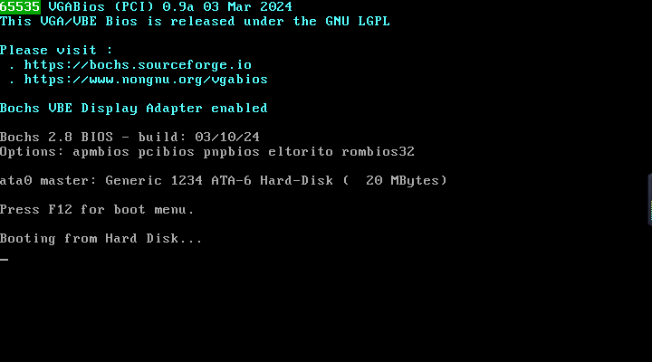
显示标号的汇编地址
其他例子
;代码清单5-1 ;文件名：c05_mbr.asm ;文件说明：硬盘主引导扇区代码 mov ax,0xb800 ;指向文本模式的显示缓冲区 mov es,ax ;以下显示字符串"Label offset:" mov byte [es:0x00],'L' mov byte [es:0x01],0x07 mov byte [es:0x02],'a' mov byte [es:0x03],0x07 mov byte [es:0x04],'b' mov byte [es:0x05],0x07 mov byte [es:0x06],'e' mov byte [es:0x07],0x07 mov byte [es:0x08],'l' mov byte [es:0x09],0x07 mov byte [es:0x0a],' ' mov byte [es:0x0b],0x07 mov byte [es:0x0c],"o" mov byte [es:0x0d],0x07 mov byte [es:0x0e],'f' mov byte [es:0x0f],0x07 mov byte [es:0x10],'f' mov byte [es:0x11],0x07 mov byte [es:0x12],'s' mov byte [es:0x13],0x07 mov byte [es:0x14],'e' mov byte [es:0x15],0x07 mov byte [es:0x16],'t' mov byte [es:0x17],0x07 mov byte [es:0x18],':' mov byte [es:0x19],0x07 mov ax,number ;取得标号number的汇编地址 mov bx,10 ;设置数据段的基地址 mov cx,cs mov ds,cx ;求个位上的数字 mov dx,0 div bx mov [0x7c00+number+0x00],dl ;保存个位上的数字 ;求十位上的数字 xor dx,dx div bx mov [0x7c00+number+0x01],dl ;保存十位上的数字 ;求百位上的数字 xor dx,dx div bx mov [0x7c00+number+0x02],dl ;保存百位上的数字 ;求千位上的数字 xor dx,dx div bx mov [0x7c00+number+0x03],dl ;保存千位上的数字 ;求万位上的数字 xor dx,dx div bx mov [0x7c00+number+0x04],dl ;保存万位上的数字 ;以下用十进制显示标号的偏移地址 mov al,[0x7c00+number+0x04] add al,0x30 mov [es:0x1a],al mov byte [es:0x1b],0x04 mov al,[0x7c00+number+0x03] add al,0x30 mov [es:0x1c],al mov byte [es:0x1d],0x04 mov al,[0x7c00+number+0x02] add al,0x30 mov [es:0x1e],al mov byte [es:0x1f],0x04 mov al,[0x7c00+number+0x01] add al,0x30 mov [es:0x20],al mov byte [es:0x21],0x04 mov al,[0x7c00+number+0x00] add al,0x30 mov [es:0x22],al mov byte [es:0x23],0x04 mov byte [es:0x24],'D' mov byte [es:0x25],0x07 infi: jmp near infi ;无限循环 number db 0,0,0,0,0 times 203 db 0 db 0x55,0xaa
阶段性重点内容总结
标号
标号可以由以下字符组成 字母 数字 _ $ # @ ~ . ? 其中，可以做打头字符的是 字母 . _ ? 标号后面可以后一个冒号，但是它不是标号的一部分
标号的作用是定伪指令或数据。在编写程序时，标号代表指令或者数据的汇编地址。
在程序运行时，处理器使用段地址和段内偏移地址。程序在运行前要先加载到某个内存段，如果是从段的起始处加载， 那么汇编地址等于偏移地址。
数据长度
- 在需要两个操作数的指令中，如果至少有一个是寄存器，则不需要长度修饰符。如
mov ah, al mov [buffer], ax xor byte [buffer], 0x55
- 如果只有一个操作数且不是寄存器，必须使用长度修饰符。如
div word [divisor]
伪指令定义数据
- 伪指令db用来定义字节(8位)长度的数据。如db 0x55
- 伪指令dw用来定义字(16位)长度的数据。如db 0x55aa
- 伪指令dd用来定义双字(32位)长度的数据。如db 0xabcd1234
- 伪指令dq用来定义四字(64位)长度的数据。如db 0x12345678aabbccdd
- 伪指令times用来重复后面的指令若干次。如
times 5 mov ax, bx
等价于
mov ax, bx
mov ax, bx
mov ax, bx
mov ax, bx
mov ax, bx
循环批量传送和条件转移
主要内容
- 跳过非指令的数据区
- 逻辑段地址的重新设定
- 串传送指令和标志寄存器
- NASM的$和$$记号
- 使用循环指令LOOP分解数位
- 基址寻址和INC指令
- 数字的显示和DEC指令
- 基址变址寻址和条件转移指令
跳过非指令的数据区
当数据和指令混合时，如何避免执行到这些指令的数据。
逻辑段地址的重新设定
串传送指令和标志寄存器
NASM的$和$$记号
使用循环指令LOOP分解数位
基址寻址和INC指令
数字的显示和DEC指令
基址变址寻址和条件转移指令
计算机中的负数
主要内容
- 无符号数和有符号数
- 减法指令SUB和求补指令NEG
- 计算机如何区分对待无符号数和有符号数
- 有符号数除法指令IDIV
- 有符号数的符号扩展指令
无符号数和有符号数
减法指令SUB和求补指令NEG
计算机如何区分对待无符号数和有符号数
有符号数除法指令IDIV
有符号数的符号扩展指令
阶段性知识总结和拓展
主要内容
- 8086的标志寄存器
- 条件转移指令和CMP指令
8086的标志寄存器
条件转移指令和CMP指令
从 1 加到 100 并显示结果
主要内容
- 字符串的定义和累加过程
- 栈的原理和使用
- 栈在数位分解和显示中的应用
- 在调试器里观察栈操作的状态
- 进一步认识栈和栈操作的特点
- 逻辑或指令OR和逻辑与指令AND
字符串的定义和累加过程
栈的原理和使用
栈在数位分解和显示中的应用
在调试器里观察栈操作的状态
进一步认识栈和栈操作的特点
逻辑或指令OR和逻辑与指令AND
INTEL 8086 处理器的寻址方式
主要内容
- 寄存器、立即数和直接寻址
- 基址寻址
- 变址寻址
- 基址变址寻址
- 练习
寄存器、立即数和直接寻址
基址寻址
变址寻址
基址变址寻址
练习
硬盘和显卡的访问与控制
主要内容
- 离开主引导扇区
- 给汇编语言程序分段
- 控制段内元素的汇编地址
- 加载器和用户程序头部段
- 加载器的工作流程和常数声明
- 确定用户程序的加载位置
- 外围设备及其接口
- 输入输出端口的访问
- 通过硬盘控制器端口读扇区数据
- 过程和过程调用
- 过程调用和返回的原理
- 加载整个用户程序
- 用户程序的重定位
- 比特位的移动指令
- 转到用户程序内部执行
- 8086的无条件转移指令
- 用户程序的执行过程
- 验证加载器加载和执行用户程序的过程
- 用户程序概述
- 与文本显示有关的回车、换行与光标控制
- 回车的光标处理和乘法指令MUL
- 换行和普通字符的处理过程与滚屏操作
- 8086的过程调用方式
- 通过RETF指令转到另一个代码段内执行
- 在程序中访问不同的数据段
- 使用新版FixVhdWr写虚拟硬盘并运行程序
- 练习